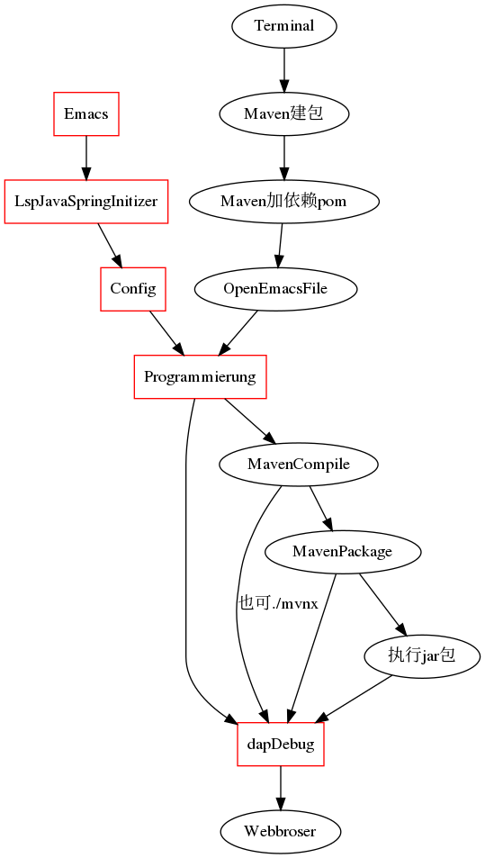

Webdesige
Table of Contents
config
Factory mode
one product one factory many many design
一个产品，在一个工厂里有多个设计实现
one product many factory many design
一个产品，在多个各自的工厂里，有自己特有的设计实现
many product many factory many design
对于多个产品，在多个各自的工厂里，有自己特有的对每个产品的设计实现
project build digraph

1 add the to the above SRC begin: dot :file ../sysconf/foto/webbuild.png 2 delete the output : [[file:../sysconf/foto/webbuild.png]] 3 push the sysc repository, because the foto is located in it 4 add the link from sysc repository https://github.com/scofild429/sysc/blob/master/foto/webbuild.png
WordPress Web development in AWS
构建后台
没事不要执行该代码
cd ~/Documents/web/key_aws ssh ubuntu@3.124.205.43 -i pass1aws.pem sudo apt update -y sudo apt upgrade -y sudo apt install apache2 sudo systemctl status apache2 sudo systemctl enable apache2 sudo apt install mariadb-server mariadb-client sudo systemctl start mariadb sudo systemctl status mariadb sudo mysql_secure_installation ... sudo systemctl restart mariadb sudo apt install php php-mysql php-gd php-cli php-common sudo apt install wget unzip sudo wget https://wordpress.org/latest.zip sudo unzip latest.zip sudo cp -r wordpress/* /var/www/html/ cd /var/www/html/ sudo chown www-data:www-data -R /var/www/html/ sudo rm index.html ## Now go to the IP webseit, when need database, do so sudo mysql -u root -p Enter ## create database wordpress; create database wordpress; create user "wpadmin"@"%" identified by "wpadminpw"; grant all privileges on wordpress.* to "wpadmin"@"%"; exit;
back to the IP webseit, pass the database , username and password, set username and password for wordpress, 到此，可以用IP 地址访问前端和后台了
解析域名
route53, 用域名创建NS A-IPV4,名称为空， 值为IP CNAME，名称www, 值为域名 再将A 和CNAME 放到namecheap的域名的DNS管理中
ssl
sudo a2enmod ssl sudo systemctl restart apache2 cd ~ wget https://dl.eff.org/certbot-auto chmod a+x certbot-auto sudo ./certbot-auto --apache....
go to https://www.sslshopper.com/ssl-checker.html and check you domina
scp
transfer file to linux instance of CE2
scp -i pass1aws.pem init.el ubuntu@3.124.205.43:.emacs.d
external html
- 将文件传到部署根目录
- 复制文件xxx.html 为page-xxx.php到应用主题根目录
- 创建页面，先只写标题，保存后改别名，slug 为xxx
- 发布后，将页面设为菜单就能访问
Web Design Envirement in Emacs
lsp-mode
lsp-java
dap-mode
Spring Boot
Emacs : M-x lsp-java-springboot-generate after build the project, it can be compiled by Maven,and run
project build digraph
digraph diagramm {
Emacs [shape=box,color=red]
LspJavaSpringInitizer [shape=box,color=red]
Config [shape=box,color=red]
dapDebug [shape=box,color=red]
Programmierung [shape=box,color=red]
Terminal -> Maven建包;
Maven建包 -> Maven加依赖pom;
Maven加依赖pom -> OpenEmacsFile;
OpenEmacsFile -> Programmierung;
Programmierung -> MavenCompile;
MavenCompile -> MavenPackage;
MavenCompile -> dapDebug[label = "也可./mvnx"];
MavenPackage -> 执行jar包;
MavenPackage -> dapDebug;
执行jar包 -> dapDebug;
Emacs -> LspJavaSpringInitizer;
LspJavaSpringInitizer -> Config;
Config -> Programmierung;
Programmierung -> dapDebug;
dapDebug -> Webbroser;
}
1 add the to the above SRC begin: dot :file ../sysconf/foto/webbuild.png 2 delete the output : [[file:../sysconf/foto/webbuild.png]] 3 push the sysc repository, because the foto is located in it 4 add the link from sysc repository https://github.com/scofild429/sysc/blob/master/foto/webbuild.png
{kind=link}
redis
- without password : redis-cli
- with password : redis-cli -h localhost -p 6379 -a 123456
PING -> PONG
MySQL
事务隔离
1 可同时访问修改 脏读 2 隔离访问 不可重返读 3 单人访问 幻读
single java file connect to mysql
1.download the driver to a current to java file
official web, and in my case
mysql-connector-java-8.0.20.jar
2.add the current path to the CLASSPATH
export CLASSPATH=mysql-connector-java-8.0.20.jar:.
3.compile and connect
mvn project connect to mysql
- execute in emacs
- create mvn project
- find the plugin of mysql and add it to pom.xml
- programmierung
- the connection can be call in the dabug of emacs
M-x :dap-debug
- execute as a jar file
if I want to package them to a package to a jar starkoverflow hitting and this plugin to pom.xml
<build> <plugins> <plugin> <artifactId>maven-assembly-plugin</artifactId> <configuration> <archive> <manifest> <mainClass>fully.qualified.MainClass</mainClass> </manifest> </archive> <descriptorRefs> <descriptorRef>jar-with-dependencies</descriptorRef> </descriptorRefs> </configuration> </plugin> </plugins> </build>and run with : mvn clean compile assembly:single
and then mvn package
can be called by jar file
java -cp target/xxxx….xx.jar com.mycompany.app.App
springboot
just call the plugins at the start
事务 Transaction
声明式：Annoation 1, 配置事务管理器 2, 开启事务注解 3, 添加事务注解 @Transaction(propagation, isolation, timeout, readout, (no)rollback) propagation;事务是否传播 isolation: 脏读：未提交的事务读取到另一个未提交的事务的原始数据 不可重复读；未提交的事务读取到另一个提交的事务的原始数据 幻读；未提交的事务读取到另一个提交的事务的修改数据
范式
| 原子性 | 一致性 | 隔离性 | 持久性 |
连接池
外键
多表
single java file connect to mysql
- download the driver to a current to java file ,official web, and in my case
- mysql-connector-java-8.0.20.jar
- add the current path to the CLASSPATH
- export CLASSPATH=mysql-connector-java-8.0.20.jar:.
- compile and connect
execute in emacs
- create mvn project
- find the plugin of mysql and add it to pom.xml
- programmierung
- the connection can be call in the dabug of emacs
M-x :dap-debug
MongoDB
open the mongodb service
| commonds | functions |
|---|---|
| or | $inc |
| in | $mul |
| exist | $rename |
| gl | $set |
| sort | $unset |
| limit | |
| skip | |
| x | |
| ^x | |
| upsert | |
| rename | |
| getIndexs | |
| createIndex | |
| dropIndex | |
sudo systemctl start mongod
create database, collections, and drops
:admin at the first step, we must login into one database
show dbs;
use xiaoma;
db.createCollection("posts");
show collections;
db.posts.drop();
db.dropDatabase();
create database, collections, and documents
use xiaoma;
db.createCollection("posts");
show collections;
db.posts.insert({
title: "my first blog",
content: "can be start"
});
db.posts.insert({
title: "my second blog",
content: "can be start now",
tag: ["unknow type"]
});
for(var i = 3;i<=10;i++){
db.posts.insert( {title :"this is my "+i+"th blog"});
};
db.posts.find();
db.posts.count();
db.posts.remove({});
db.posts.drop();
db.dropDatabase();
backup and restore
mongo xiaoma : can just get in xiaoma database
- 01, create documents
use xiaoma; db.createCollection("posts"); show collections; db.posts.insert({ title: "my first blog", content: "can be start" }); db.posts.insert({ title: "my second blog", content: "can be start now", tag: ["unknow type"] }); for(var i = 3;i<=10;i++){ db.posts.insert( {title :"this is my "+i+"th blog"}); }; db.posts.find(); db.posts.count(); - 02, dump
cd ~/Desktop/ mkdir mongobk cd mongobk mongodump -d xiaoma
- 03, delete documents
use xiaoma; db.posts.remove({}); db.posts.find(); exit; - 04, restore
cd ~/Desktop/mongobk mongorestore --drop - 05, check
use xiaoma; db.posts.find(); db.posts.drop(); db.dropDatabase();
frontend
JS
some ES6 has to be connected JS to here,
ts
Vue
Mustache
{{item }} item von el can be here
v-bind
v-bind: kann verbunden werden mit id, href, key, für characters von DOM elements
v-show
if v-show is false, the DOM element is already included, but will not be presented.
v-if
if v-if is false, the DOM element will be deleted
webpack
npm init -y npm i -D webpack webpack-cli typescript ts-loader 设定生成的html的特性，包括使用模板 npm i -D html-webpack-plugin 设定项目的运行服务器 npm i -D webpack-dev-server in package.json/"scripts": "start": "webpack serve --open chromium-browser" and then in terminal: npm start 删除上次的生成文件，整个dist目录 npm i -D clean-webpack-plugin
const path = require("path"); const HTMLWebpackPlugin = require("html-webpack-plugin"); const { CleanWebpackPlugin } = require("clean-webpack-plugin"); module.exports = { entry: "./src/index.ts", output: { path: path.resolve(__dirname, "dist"), filename: "bundle.js", // environment: { // arrowFunction: false, // }, }, module: { rules: [ { test: /\.ts$/, use: [ { loader: "babel-loader", options: { presets: [ [ "@babel/preset-env", { targets: { chrome: "87", // ie: "11", }, corejs: "3", useBuiltIns: "usage", }, ], ], }, }, "ts-loader", ], exclude: /node-modules/, }, ], }, plugins: [ new HTMLWebpackPlugin({ title: "APP For Webpack", }), new CleanWebpackPlugin(), ], //模块设定 resolve: { extensions: [".ts", ".js"], }, };
JQary
JQuery选择器
| elements chooser | class chooser | id chooser |
| $("p"), $("div"), $("h2") | $(".test") | $("#test") |
CSS 选择器
| elements chooser | class chooser | id chooser |
| p, div, h2 | .test | #test |
operation function
| toggle | fade | slide | animate | stop | clain |
| text | html | val | attr | append | prepend |
| after | before | remove | empty | addclass | removeclass |
| css | width | height | perent | childen | siblings |
| load | get | post | noConflict |
AJAX
Vue
id 选择器的名字不能是数字
Servlet
Bootstrap
backend
Spring
sammelung:
| Component | inject the class into Spring from current file as bean |
| ComponentScan | load the bean into current file from Spring as class |
| Autowired | complete all beans dependence with the beans in spring |
| Configuration | configuration class |
模式： 单例和多例：生命周期：创建和销毁时间
Annotation mehthod
- @Component
将所修饰的类做成bean，由 Spring 来管理 为了减少耦合，建立一个配置类来管理全部的bean 由 @Configuation and @ComponentScan 创建的配置类来管理。 注意Spring只是默认管理@ComponentScan所在的其以下的区域， 除非指定包名，可以到其上一级的包路径
- web hierarchy with @component
Controller layer use @Controller than @Component Service layer use @Service than @Component Dao layer use @Repository than @Component
- autowired
- Set注入 利用set方法
- cost注入 利用构造方法，可和set 注入混用
- 普通成员变量
- 普通成员函数
- interface with @Autowired
注入 @Compenten 加在实现类 装配 @Autowired 放在该接口的类型前 产生歧义 多个Autowired 如果该接口有多个实现类，不知道用那个实现类的bean 首选bean @Primary 多个实现类的Compenten注入时，可制定唯一一个实现类为首 限定附 @Qualifier("xxx") 在Autowired时，使用一样的 @Qualifier("xxx") bean id @Compenten("xxx") 同样在Autowired时，使用一样的 @Qualifier("xxx") 默认bean id xxx即为类名 在Autowired时 @Qualifier("xxx")时，类名首字母小写即可 二合一 @Resource(name="小写类名") 代替Autowired 和Qulifier()
xml mehthod
New-> XML Configuration File -> Spring Config default name: ApplicationContext.xml
<bean class="xxx.xxx.xxx.class" id="" (gleich wie name="") 别名可以多个，隔开即可 <consturctor-arg ref="beanid"> für contributor bean <consturctor-arg name="xxx" value="yyy"> für contributor string c:contributor C名称空间 <list> <map> <set> <p> <util> <properties> … ><bean>
bean method
Don't use @Component or Service Controller Repository to inject bean(IOC) with a config class @Configuation Use @bean on it's consturctor function to inject bean. 对其多实现类的歧义性处理，和自动装配一样，@Primary @Qualifer and BEANID
advancd mehthod
log4j
after injuct in pox.xml, create log4j.properties in project resources fold
log4j.rootCategory=INFO, stdout
log4j.appender.stdout=org.apache.log4j.ConsoleAppender
log4j.appender.stdout.layout=org.apache.log4j.PatternLayout
log4j.appender.stdout.layout.ConversionPattern=%d{ABSOLUTE} %5p %t %c{2}:%L - %m%n
log4j.category.org.springframework.beans.factory=DEBUG
Test
| @RunWith |
| @ContextConfiguration |
AOP
动态代理，(JDK，接口) (CGLib, 接口)
前置，后置，环绕 class 1 -> Bean 1 Bean 1 + pointcut(expression,within,args) + class 2 -> Bean 2
JDBC
JDBC Template update(sql, args) 增删改 queryForObject()查 query() bachtupdate()
SpingMVC
Web action –> 前端控制 –> Path –> 后端 –> handler –> 前端 backend reserver arguments.
- single argument
- multi arguments
- class instance
| C -> C | redirect | 重定向 | 刷新后会重复提交增删改 |
| C -> V | forward | 转发 | 查询需要转发 |
-Dfile.encoding=utf-8 for Tomcat server VM Options: backend output for chineseisch
C-> V assugment request session model
Spring Boot
一、Spring Boot 入门
- 1、Spring Boot 简介
简化Spring应用开发的一个框架；
整个Spring技术栈的一个大整合；
J2EE开发的一站式解决方案；
- 2、微服务
2014，martin fowler
微服务：架构风格（服务微化）
一个应用应该是一组小型服务；可以通过HTTP的方式进行互通；
单体应用：ALL IN ONE
微服务：每一个功能元素最终都是一个可独立替换和独立升级的软件单元；
- 3、环境准备
http://www.gulixueyuan.com/ 谷粒学院
环境约束
–jdk1.8：Spring Boot 推荐jdk1.7及以上；java version "1.8.0\112"
–maven3.x：maven 3.3以上版本；Apache Maven 3.3.9
–IntelliJIDEA2017：IntelliJ IDEA 2017.2.2 x64、STS
–SpringBoot 1.5.9.RELEASE：1.5.9；
统一环境；
- 1、MAVEN设置；
给maven 的settings.xml配置文件的profiles标签添加
<profile> <id>jdk-1.8</id> <activation> <activeByDefault>true</activeByDefault> <jdk>1.8</jdk> </activation> <properties> <maven.compiler.source>1.8</maven.compiler.source> <maven.compiler.target>1.8</maven.compiler.target> <maven.compiler.compilerVersion>1.8</maven.compiler.compilerVersion> </properties> </profile> - 2、IDEA设置
整合maven进来；

Figure 2: idea设置

Figure 3: images/
- 1、MAVEN设置；
- 4、Spring Boot HelloWorld
一个功能：
浏览器发送hello请求，服务器接受请求并处理，响应Hello World字符串；
- 1、创建一个maven工程；（jar）
- 2、导入spring boot相关的依赖
<parent> <groupId>org.springframework.boot</groupId> <artifactId>spring-boot-starter-parent</artifactId> <version>1.5.9.RELEASE</version> </parent> <dependencies> <dependency> <groupId>org.springframework.boot</groupId> <artifactId>spring-boot-starter-web</artifactId> </dependency> </dependencies> - 3、编写一个主程序；启动Spring Boot应用
/** * @SpringBootApplication 来标注一个主程序类，说明这是一个Spring Boot应用 */ @SpringBootApplication public class HelloWorldMainApplication { public static void main(String[] args) { // Spring应用启动起来 SpringApplication.run(HelloWorldMainApplication.class,args); } }
- 4、编写相关的Controller、Service
@Controller public class HelloController { @ResponseBody @RequestMapping("/hello") public String hello(){ return "Hello World!"; } }
- 5、运行主程序测试
- 6、简化部署
<!-- 这个插件，可以将应用打包成一个可执行的jar包；--> <build> <plugins> <plugin> <groupId>org.springframework.boot</groupId> <artifactId>spring-boot-maven-plugin</artifactId> </plugin> </plugins> </build>将这个应用打成jar包，直接使用java -jar的命令进行执行；
- 1、创建一个maven工程；（jar）
- 5、Hello World探究
- 1、POM文件
- 1、父项目
<parent> <groupId>org.springframework.boot</groupId> <artifactId>spring-boot-starter-parent</artifactId> <version>1.5.9.RELEASE</version> </parent> 他的父项目是 <parent> <groupId>org.springframework.boot</groupId> <artifactId>spring-boot-dependencies</artifactId> <version>1.5.9.RELEASE</version> <relativePath>../../spring-boot-dependencies</relativePath> </parent> 他来真正管理Spring Boot应用里面的所有依赖版本；Spring Boot的版本仲裁中心；
以后我们导入依赖默认是不需要写版本；（没有在dependencies里面管理的依赖自然需要声明版本号）
- 2、启动器
<dependency> <groupId>org.springframework.boot</groupId> <artifactId>spring-boot-starter-web</artifactId> </dependency>spring-boot-starter-==web==：
spring-boot-starter：spring-boot场景启动器；帮我们导入了web模块正常运行所依赖的组件；
Spring Boot将所有的功能场景都抽取出来，做成一个个的starters（启动器），只需要在项目里面引入这些starter相关场景的所有依赖都会导入进来。要用什么功能就导入什么场景的启动器
- 1、父项目
- 2、主程序类，主入口类
/** * @SpringBootApplication 来标注一个主程序类，说明这是一个Spring Boot应用 */ @SpringBootApplication public class HelloWorldMainApplication { public static void main(String[] args) { // Spring应用启动起来 SpringApplication.run(HelloWorldMainApplication.class,args); } }
@**SpringBootApplication**: Spring Boot应用标注在某个类上说明这个类是SpringBoot的主配置类，SpringBoot就应该运行这个类的main方法来启动SpringBoot应用；
@Target(ElementType.TYPE) @Retention(RetentionPolicy.RUNTIME) @Documented @Inherited @SpringBootConfiguration @EnableAutoConfiguration @ComponentScan(excludeFilters = { @Filter(type = FilterType.CUSTOM, classes = TypeExcludeFilter.class), @Filter(type = FilterType.CUSTOM, classes = AutoConfigurationExcludeFilter.class) }) public @interface SpringBootApplication {
@**SpringBootConfiguration**:Spring Boot的配置类；
标注在某个类上，表示这是一个Spring Boot的配置类；
@**Configuration**:配置类上来标注这个注解；
配置类 –— 配置文件；配置类也是容器中的一个组件；@Component
@**EnableAutoConfiguration**：开启自动配置功能；
以前我们需要配置的东西，Spring Boot帮我们自动配置；@**EnableAutoConfiguration**告诉SpringBoot开启自动配置功能；这样自动配置才能生效；
@AutoConfigurationPackage @Import(EnableAutoConfigurationImportSelector.class) public @interface EnableAutoConfiguration {
@**AutoConfigurationPackage**：自动配置包
@**Import**(AutoConfigurationPackages.Registrar.class)：
Spring的底层注解@Import，给容器中导入一个组件；导入的组件由AutoConfigurationPackages.Registrar.class；
=将主配置类（@SpringBootApplication标注的类）的所在包及下面所有子包里面的所有组件扫描到Spring容器；= @**Import**(EnableAutoConfigurationImportSelector.class)；
给容器中导入组件？
*EnableAutoConfigurationImportSelector*：导入哪些组件的选择器；
将所有需要导入的组件以全类名的方式返回；这些组件就会被添加到容器中；
会给容器中导入非常多的自动配置类（xxxAutoConfiguration）；就是给容器中导入这个场景需要的所有组件，并配置好这些组件；

有了自动配置类，免去了我们手动编写配置注入功能组件等的工作；
SpringFactoriesLoader.loadFactoryNames(EnableAutoConfiguration.class,classLoader)；
==Spring Boot在启动的时候从类路径下的META-INF/spring.factories中获取EnableAutoConfiguration指定的值，将这些值作为自动配置类导入到容器中，自动配置类就生效，帮我们进行自动配置工作；==以前我们需要自己配置的东西，自动配置类都帮我们；
J2EE的整体整合解决方案和自动配置都在spring-boot-autoconfigure-1.5.9.RELEASE.jar；
=Spring注解版（谷粒学院）=
- 1、POM文件
- 6、使用Spring Initializer快速创建Spring Boot项目
- 1、IDEA：使用 Spring Initializer快速创建项目
IDE都支持使用Spring的项目创建向导快速创建一个Spring Boot项目；
选择我们需要的模块；向导会联网创建Spring Boot项目；
默认生成的Spring Boot项目；
- 主程序已经生成好了，我们只需要我们自己的逻辑
- resources文件夹中目录结构
- static：保存所有的静态资源； js css images；
- templates：保存所有的模板页面；（Spring Boot默认jar包使用嵌入式的Tomcat，默认不支持JSP页面）；可以使用模板引擎（freemarker、thymeleaf）；
- application.properties：Spring Boot应用的配置文件；可以修改一些默认设置；
- 2、STS使用 Spring Starter Project快速创建项目
- 1、IDEA：使用 Spring Initializer快速创建项目
二、配置文件
- 1、配置文件
SpringBoot使用一个全局的配置文件，配置文件名是固定的；
•application.properties
•application.yml
配置文件的作用：修改SpringBoot自动配置的默认值；SpringBoot在底层都给我们自动配置好；
YAML（YAML Ain't Markup Language）
YAML A Markup Language：是一个标记语言
YAML isn't Markup Language：不是一个标记语言；
标记语言：
以前的配置文件；大多都使用的是 *xxxx.xml*文件；
YAML：*以数据为中心*，比json、xml等更适合做配置文件；
YAML：配置例子
server: port: 8081
XML：
<server> <port>8081</port> </server> - 2、YAML语法：
- 1、基本语法
k:(空格)v：表示一对键值对（空格必须有）；
以*空格*的缩进来控制层级关系；只要是左对齐的一列数据，都是同一个层级的
server: port: 8081 path: /hello属性和值也是大小写敏感；
- 2、值的写法
- 字面量：普通的值（数字，字符串，布尔）
k: v：字面直接来写；
字符串默认不用加上单引号或者双引号；
""：双引号；不会转义字符串里面的特殊字符；特殊字符会作为本身想表示的意思
name: "zhangsan \n lisi"：输出；zhangsan 换行 lisi
''：单引号；会转义特殊字符，特殊字符最终只是一个普通的字符串数据
name: ‘zhangsan \n lisi'：输出；zhangsan \n lisi
- 对象、Map（属性和值）（键值对）：
k: v：在下一行来写对象的属性和值的关系；注意缩进
对象还是k: v的方式
friends: lastName: zhangsan age: 20行内写法：
friends: {lastName: zhangsan,age: 18} - 数组（List、Set）：
用- 值表示数组中的一个元素
pets: - cat - dog - pig
行内写法
pets: [cat,dog,pig]
- 字面量：普通的值（数字，字符串，布尔）
- 1、基本语法
- 3、配置文件值注入
配置文件
person: lastName: hello age: 18 boss: false birth: 2017/12/12 maps: {k1: v1,k2: 12} lists: - lisi - zhaoliu dog: name: 小狗 age: 12javaBean：
/** * 将配置文件中配置的每一个属性的值，映射到这个组件中 * @ConfigurationProperties：告诉SpringBoot将本类中的所有属性和配置文件中相关的配置进行绑定； * prefix = "person"：配置文件中哪个下面的所有属性进行一一映射 * * 只有这个组件是容器中的组件，才能容器提供的@ConfigurationProperties功能； * */ @Component @ConfigurationProperties(prefix = "person") public class Person { private String lastName; private Integer age; private Boolean boss; private Date birth; private Map<String,Object> maps; private List<Object> lists; private Dog dog;
我们可以导入配置文件处理器，以后编写配置就有提示了
<!--导入配置文件处理器，配置文件进行绑定就会有提示--> <dependency> <groupId>org.springframework.boot</groupId> <artifactId>spring-boot-configuration-processor</artifactId> <optional>true</optional> </dependency>- 1、properties配置文件在idea中默认utf-8可能会乱码
调整

Figure 4: idea配置乱码
- 2、@Value获取值和@ConfigurationProperties获取值比较
@ConfigurationProperties @Value 功能 批量注入配置文件中的属性 一个个指定 松散绑定（松散语法） 支持 不支持 SpEL 不支持 支持 JSR303数据校验 支持 不支持 复杂类型封装 支持 不支持 配置文件yml还是properties他们都能获取到值；
如果说，我们只是在某个业务逻辑中需要获取一下配置文件中的某项值，使用@Value；
如果说，我们专门编写了一个javaBean来和配置文件进行映射，我们就直接使用@ConfigurationProperties；
- 3、配置文件注入值数据校验
@Component @ConfigurationProperties(prefix = "person") @Validated public class Person { /** * <bean class="Person"> * <property name="lastName" value="字面量/${key}从环境变量、配置文件中获取值/#{SpEL}"></property> * <bean/> */ //lastName必须是邮箱格式 @Email //@Value("${person.last-name}") private String lastName; //@Value("#{11*2}") private Integer age; //@Value("true") private Boolean boss; private Date birth; private Map<String,Object> maps; private List<Object> lists; private Dog dog;
- 4、@PropertySource&@ImportResource&@Bean
@**PropertySource**：加载指定的配置文件；
/** * 将配置文件中配置的每一个属性的值，映射到这个组件中 * @ConfigurationProperties：告诉SpringBoot将本类中的所有属性和配置文件中相关的配置进行绑定； * prefix = "person"：配置文件中哪个下面的所有属性进行一一映射 * * 只有这个组件是容器中的组件，才能容器提供的@ConfigurationProperties功能； * @ConfigurationProperties(prefix = "person")默认从全局配置文件中获取值； * */ @PropertySource(value = {"classpath:person.properties"}) @Component @ConfigurationProperties(prefix = "person") //@Validated public class Person { /** * <bean class="Person"> * <property name="lastName" value="字面量/${key}从环境变量、配置文件中获取值/#{SpEL}"></property> * <bean/> */ //lastName必须是邮箱格式 // @Email //@Value("${person.last-name}") private String lastName; //@Value("#{11*2}") private Integer age; //@Value("true") private Boolean boss;
@**ImportResource**：导入Spring的配置文件，让配置文件里面的内容生效；
Spring Boot里面没有Spring的配置文件，我们自己编写的配置文件，也不能自动识别；
想让Spring的配置文件生效，加载进来；@**ImportResource**标注在一个配置类上
@ImportResource(locations = {"classpath:beans.xml"}) 导入Spring的配置文件让其生效
不来编写Spring的配置文件
<?xml version="1.0" encoding="UTF-8"?> <beans xmlns="http://www.springframework.org/schema/beans" xmlns:xsi="http://www.w3.org/2001/XMLSchema-instance" xsi:schemaLocation="http://www.springframework.org/schema/beans http://www.springframework.org/schema/beans/spring-beans.xsd"> <bean id="helloService" class="com.atguigu.springboot.service.HelloService"></bean> </beans>SpringBoot推荐给容器中添加组件的方式；推荐使用全注解的方式
1、配置类*@Configuration*-–—>Spring配置文件
2、使用*@Bean*给容器中添加组件
/** * @Configuration：指明当前类是一个配置类；就是来替代之前的Spring配置文件 * * 在配置文件中用<bean><bean/>标签添加组件 * */ @Configuration public class MyAppConfig { //将方法的返回值添加到容器中；容器中这个组件默认的id就是方法名 @Bean public HelloService helloService02(){ System.out.println("配置类@Bean给容器中添加组件了..."); return new HelloService(); } }
- 1、properties配置文件在idea中默认utf-8可能会乱码
- 4、配置文件占位符
- 1、随机数
${random.value}、${random.int}、${random.long} ${random.int(10)}、${random.int[1024,65536]} - 2、占位符获取之前配置的值，如果没有可以是用:指定默认值
person.last-name=张三${random.uuid} person.age=${random.int} person.birth=2017/12/15 person.boss=false person.maps.k1=v1 person.maps.k2=14 person.lists=a,b,c person.dog.name=${person.hello:hello}_dog person.dog.age=15
- 1、随机数
- 5、Profile
- 1、多Profile文件
我们在主配置文件编写的时候，文件名可以是 application-{profile}.properties/yml
默认使用application.properties的配置；
- 2、yml支持多文档块方式
server: port: 8081 spring: profiles: active: prod --- server: port: 8083 spring: profiles: dev --- server: port: 8084 spring: profiles: prod #指定属于哪个环境 - 3、激活指定profile
1、在配置文件中指定 spring.profiles.active=dev
2、命令行：
java -jar spring-boot-02-config-0.0.1-SNAPSHOT.jar –spring.profiles.active=dev；
可以直接在测试的时候，配置传入命令行参数
3、虚拟机参数；
-Dspring.profiles.active=dev
- 1、多Profile文件
- 6、配置文件加载位置
springboot 启动会扫描以下位置的application.properties或者application.yml文件作为Spring boot的默认配置文件
--./
–classpath:/config/
–classpath:/
优先级由高到底，高优先级的配置会覆盖低优先级的配置；
SpringBoot会从这四个位置全部加载主配置文件；*互补配置*；
=我们还可以通过spring.config.location来改变默认的配置文件位置=项目打包好以后，我们可以使用命令行参数的形式，启动项目的时候来指定配置文件的新位置；指定配置文件和默认加载的这些配置文件共同起作用形成互补配置；
java -jar spring-boot-02-config-02-0.0.1-SNAPSHOT.jar –spring.config.location=G:/application.properties
- 7、外部配置加载顺序
=SpringBoot也可以从以下位置加载配置； 优先级从高到低；高优先级的配置覆盖低优先级的配置，所有的配置会形成互补配置=1.命令行参数
所有的配置都可以在命令行上进行指定
java -jar spring-boot-02-config-02-0.0.1-SNAPSHOT.jar –server.port=8087 –server.context-path=/abc
多个配置用空格分开； –配置项=值
2.来自java:comp/env的JNDI属性
3.Java系统属性（System.getProperties()）
4.操作系统环境变量
5.RandomValuePropertySource配置的random.*属性值
=*由jar包外向jar包内进行寻找；*==*优先加载带profile*=6.jar包外部的application-{profile}.properties或application.yml(带spring.profile)配置文件
7.jar包内部的application-{profile}.properties或application.yml(带spring.profile)配置文件
=*再来加载不带profile*=8.jar包外部的application.properties或application.yml(不带spring.profile)配置文件
9.jar包内部的application.properties或application.yml(不带spring.profile)配置文件
10.@Configuration注解类上的@PropertySource
11.通过SpringApplication.setDefaultProperties指定的默认属性
所有支持的配置加载来源；
- 8、自动配置原理
配置文件到底能写什么？怎么写？自动配置原理；
- 1、*自动配置原理：*
1）、SpringBoot启动的时候加载主配置类，开启了自动配置功能
=@EnableAutoConfiguration=2）、@EnableAutoConfiguration 作用：
- 利用EnableAutoConfigurationImportSelector给容器中导入一些组件？
- 可以查看selectImports()方法的内容；
- List
configurations = getCandidateConfigurations(annotationMetadata, attributes);获取候选的配置 #+BEGINSRC java SpringFactoriesLoader.loadFactoryNames() 扫描所有jar包类路径下 META-INF/spring.factories 把扫描到的这些文件的内容包装成properties对象 从properties中获取到EnableAutoConfiguration.class类（类名）对应的值，然后把他们添加在容器中 #+ENDSRC
=将 类路径下 META-INF/spring.factories 里面配置的所有EnableAutoConfiguration的值加入到了容器中；=# Auto Configure org.springframework.boot.autoconfigure.EnableAutoConfiguration=\ org.springframework.boot.autoconfigure.admin.SpringApplicationAdminJmxAutoConfiguration,\ org.springframework.boot.autoconfigure.aop.AopAutoConfiguration,\ org.springframework.boot.autoconfigure.amqp.RabbitAutoConfiguration,\ org.springframework.boot.autoconfigure.batch.BatchAutoConfiguration,\ org.springframework.boot.autoconfigure.cache.CacheAutoConfiguration,\ org.springframework.boot.autoconfigure.cassandra.CassandraAutoConfiguration,\ org.springframework.boot.autoconfigure.cloud.CloudAutoConfiguration,\ org.springframework.boot.autoconfigure.context.ConfigurationPropertiesAutoConfiguration,\ org.springframework.boot.autoconfigure.context.MessageSourceAutoConfiguration,\ org.springframework.boot.autoconfigure.context.PropertyPlaceholderAutoConfiguration,\ org.springframework.boot.autoconfigure.couchbase.CouchbaseAutoConfiguration,\ org.springframework.boot.autoconfigure.dao.PersistenceExceptionTranslationAutoConfiguration,\ org.springframework.boot.autoconfigure.data.cassandra.CassandraDataAutoConfiguration,\ org.springframework.boot.autoconfigure.data.cassandra.CassandraRepositoriesAutoConfiguration,\ org.springframework.boot.autoconfigure.data.couchbase.CouchbaseDataAutoConfiguration,\ org.springframework.boot.autoconfigure.data.couchbase.CouchbaseRepositoriesAutoConfiguration,\ org.springframework.boot.autoconfigure.data.elasticsearch.ElasticsearchAutoConfiguration,\ org.springframework.boot.autoconfigure.data.elasticsearch.ElasticsearchDataAutoConfiguration,\ org.springframework.boot.autoconfigure.data.elasticsearch.ElasticsearchRepositoriesAutoConfiguration,\ org.springframework.boot.autoconfigure.data.jpa.JpaRepositoriesAutoConfiguration,\ org.springframework.boot.autoconfigure.data.ldap.LdapDataAutoConfiguration,\ org.springframework.boot.autoconfigure.data.ldap.LdapRepositoriesAutoConfiguration,\ org.springframework.boot.autoconfigure.data.mongo.MongoDataAutoConfiguration,\ org.springframework.boot.autoconfigure.data.mongo.MongoRepositoriesAutoConfiguration,\ org.springframework.boot.autoconfigure.data.neo4j.Neo4jDataAutoConfiguration,\ org.springframework.boot.autoconfigure.data.neo4j.Neo4jRepositoriesAutoConfiguration,\ org.springframework.boot.autoconfigure.data.solr.SolrRepositoriesAutoConfiguration,\ org.springframework.boot.autoconfigure.data.redis.RedisAutoConfiguration,\ org.springframework.boot.autoconfigure.data.redis.RedisRepositoriesAutoConfiguration,\ org.springframework.boot.autoconfigure.data.rest.RepositoryRestMvcAutoConfiguration,\ org.springframework.boot.autoconfigure.data.web.SpringDataWebAutoConfiguration,\ org.springframework.boot.autoconfigure.elasticsearch.jest.JestAutoConfiguration,\ org.springframework.boot.autoconfigure.freemarker.FreeMarkerAutoConfiguration,\ org.springframework.boot.autoconfigure.gson.GsonAutoConfiguration,\ org.springframework.boot.autoconfigure.h2.H2ConsoleAutoConfiguration,\ org.springframework.boot.autoconfigure.hateoas.HypermediaAutoConfiguration,\ org.springframework.boot.autoconfigure.hazelcast.HazelcastAutoConfiguration,\ org.springframework.boot.autoconfigure.hazelcast.HazelcastJpaDependencyAutoConfiguration,\ org.springframework.boot.autoconfigure.info.ProjectInfoAutoConfiguration,\ org.springframework.boot.autoconfigure.integration.IntegrationAutoConfiguration,\ org.springframework.boot.autoconfigure.jackson.JacksonAutoConfiguration,\ org.springframework.boot.autoconfigure.jdbc.DataSourceAutoConfiguration,\ org.springframework.boot.autoconfigure.jdbc.JdbcTemplateAutoConfiguration,\ org.springframework.boot.autoconfigure.jdbc.JndiDataSourceAutoConfiguration,\ org.springframework.boot.autoconfigure.jdbc.XADataSourceAutoConfiguration,\ org.springframework.boot.autoconfigure.jdbc.DataSourceTransactionManagerAutoConfiguration,\ org.springframework.boot.autoconfigure.jms.JmsAutoConfiguration,\ org.springframework.boot.autoconfigure.jmx.JmxAutoConfiguration,\ org.springframework.boot.autoconfigure.jms.JndiConnectionFactoryAutoConfiguration,\ org.springframework.boot.autoconfigure.jms.activemq.ActiveMQAutoConfiguration,\ org.springframework.boot.autoconfigure.jms.artemis.ArtemisAutoConfiguration,\ org.springframework.boot.autoconfigure.flyway.FlywayAutoConfiguration,\ org.springframework.boot.autoconfigure.groovy.template.GroovyTemplateAutoConfiguration,\ org.springframework.boot.autoconfigure.jersey.JerseyAutoConfiguration,\ org.springframework.boot.autoconfigure.jooq.JooqAutoConfiguration,\ org.springframework.boot.autoconfigure.kafka.KafkaAutoConfiguration,\ org.springframework.boot.autoconfigure.ldap.embedded.EmbeddedLdapAutoConfiguration,\ org.springframework.boot.autoconfigure.ldap.LdapAutoConfiguration,\ org.springframework.boot.autoconfigure.liquibase.LiquibaseAutoConfiguration,\ org.springframework.boot.autoconfigure.mail.MailSenderAutoConfiguration,\ org.springframework.boot.autoconfigure.mail.MailSenderValidatorAutoConfiguration,\ org.springframework.boot.autoconfigure.mobile.DeviceResolverAutoConfiguration,\ org.springframework.boot.autoconfigure.mobile.DeviceDelegatingViewResolverAutoConfiguration,\ org.springframework.boot.autoconfigure.mobile.SitePreferenceAutoConfiguration,\ org.springframework.boot.autoconfigure.mongo.embedded.EmbeddedMongoAutoConfiguration,\ org.springframework.boot.autoconfigure.mongo.MongoAutoConfiguration,\ org.springframework.boot.autoconfigure.mustache.MustacheAutoConfiguration,\ org.springframework.boot.autoconfigure.orm.jpa.HibernateJpaAutoConfiguration,\ org.springframework.boot.autoconfigure.reactor.ReactorAutoConfiguration,\ org.springframework.boot.autoconfigure.security.SecurityAutoConfiguration,\ org.springframework.boot.autoconfigure.security.SecurityFilterAutoConfiguration,\ org.springframework.boot.autoconfigure.security.FallbackWebSecurityAutoConfiguration,\ org.springframework.boot.autoconfigure.security.oauth2.OAuth2AutoConfiguration,\ org.springframework.boot.autoconfigure.sendgrid.SendGridAutoConfiguration,\ org.springframework.boot.autoconfigure.session.SessionAutoConfiguration,\ org.springframework.boot.autoconfigure.social.SocialWebAutoConfiguration,\ org.springframework.boot.autoconfigure.social.FacebookAutoConfiguration,\ org.springframework.boot.autoconfigure.social.LinkedInAutoConfiguration,\ org.springframework.boot.autoconfigure.social.TwitterAutoConfiguration,\ org.springframework.boot.autoconfigure.solr.SolrAutoConfiguration,\ org.springframework.boot.autoconfigure.thymeleaf.ThymeleafAutoConfiguration,\ org.springframework.boot.autoconfigure.transaction.TransactionAutoConfiguration,\ org.springframework.boot.autoconfigure.transaction.jta.JtaAutoConfiguration,\ org.springframework.boot.autoconfigure.validation.ValidationAutoConfiguration,\ org.springframework.boot.autoconfigure.web.DispatcherServletAutoConfiguration,\ org.springframework.boot.autoconfigure.web.EmbeddedServletContainerAutoConfiguration,\ org.springframework.boot.autoconfigure.web.ErrorMvcAutoConfiguration,\ org.springframework.boot.autoconfigure.web.HttpEncodingAutoConfiguration,\ org.springframework.boot.autoconfigure.web.HttpMessageConvertersAutoConfiguration,\ org.springframework.boot.autoconfigure.web.MultipartAutoConfiguration,\ org.springframework.boot.autoconfigure.web.ServerPropertiesAutoConfiguration,\ org.springframework.boot.autoconfigure.web.WebClientAutoConfiguration,\ org.springframework.boot.autoconfigure.web.WebMvcAutoConfiguration,\ org.springframework.boot.autoconfigure.websocket.WebSocketAutoConfiguration,\ org.springframework.boot.autoconfigure.websocket.WebSocketMessagingAutoConfiguration,\ org.springframework.boot.autoconfigure.webservices.WebServicesAutoConfiguration
每一个这样的 xxxAutoConfiguration类都是容器中的一个组件，都加入到容器中；用他们来做自动配置；
3）、每一个自动配置类进行自动配置功能；
4）、以*HttpEncodingAutoConfiguration（Http编码自动配置）*为例解释自动配置原理；
@Configuration //表示这是一个配置类，以前编写的配置文件一样，也可以给容器中添加组件 @EnableConfigurationProperties(HttpEncodingProperties.class) //启动指定类的ConfigurationProperties功能；将配置文件中对应的值和HttpEncodingProperties绑定起来；并把HttpEncodingProperties加入到ioc容器中 @ConditionalOnWebApplication //Spring底层@Conditional注解（Spring注解版），根据不同的条件，如果满足指定的条件，整个配置类里面的配置就会生效； 判断当前应用是否是web应用，如果是，当前配置类生效 @ConditionalOnClass(CharacterEncodingFilter.class) //判断当前项目有没有这个类CharacterEncodingFilter；SpringMVC中进行乱码解决的过滤器； @ConditionalOnProperty(prefix = "spring.http.encoding", value = "enabled", matchIfMissing = true) //判断配置文件中是否存在某个配置 spring.http.encoding.enabled；如果不存在，判断也是成立的 //即使我们配置文件中不配置pring.http.encoding.enabled=true，也是默认生效的； public class HttpEncodingAutoConfiguration { //他已经和SpringBoot的配置文件映射了 private final HttpEncodingProperties properties; //只有一个有参构造器的情况下，参数的值就会从容器中拿 public HttpEncodingAutoConfiguration(HttpEncodingProperties properties) { this.properties = properties; } @Bean //给容器中添加一个组件，这个组件的某些值需要从properties中获取 @ConditionalOnMissingBean(CharacterEncodingFilter.class) //判断容器没有这个组件？ public CharacterEncodingFilter characterEncodingFilter() { CharacterEncodingFilter filter = new OrderedCharacterEncodingFilter(); filter.setEncoding(this.properties.getCharset().name()); filter.setForceRequestEncoding(this.properties.shouldForce(Type.REQUEST)); filter.setForceResponseEncoding(this.properties.shouldForce(Type.RESPONSE)); return filter; }
根据当前不同的条件判断，决定这个配置类是否生效？
一但这个配置类生效；这个配置类就会给容器中添加各种组件；这些组件的属性是从对应的properties类中获取的，这些类里面的每一个属性又是和配置文件绑定的；
5）、所有在配置文件中能配置的属性都是在xxxxProperties类中封装者‘；配置文件能配置什么就可以参照某个功能对应的这个属性类
@ConfigurationProperties(prefix = "spring.http.encoding") //从配置文件中获取指定的值和bean的属性进行绑定 public class HttpEncodingProperties { public static final Charset DEFAULT_CHARSET = Charset.forName("UTF-8");
精髓：
1）、SpringBoot启动会加载大量的自动配置类
2）、我们看我们需要的功能有没有SpringBoot默认写好的自动配置类；
3）、我们再来看这个自动配置类中到底配置了哪些组件；（只要我们要用的组件有，我们就不需要再来配置了）
4）、给容器中自动配置类添加组件的时候，会从properties类中获取某些属性。我们就可以在配置文件中指定这些属性的值；
xxxxAutoConfigurartion：自动配置类；
给容器中添加组件
xxxxProperties:封装配置文件中相关属性；
- 2、细节
- 1、@Conditional派生注解（Spring注解版原生的@Conditional作用）
作用：必须是@Conditional指定的条件成立，才给容器中添加组件，配置配里面的所有内容才生效；
@Conditional扩展注解 作用（判断是否满足当前指定条件） @ConditionalOnJava 系统的java版本是否符合要求 @ConditionalOnBean 容器中存在指定Bean； @ConditionalOnMissingBean 容器中不存在指定Bean； @ConditionalOnExpression 满足SpEL表达式指定 @ConditionalOnClass 系统中有指定的类 @ConditionalOnMissingClass 系统中没有指定的类 @ConditionalOnSingleCandidate 容器中只有一个指定的Bean，或者这个Bean是首选Bean @ConditionalOnProperty 系统中指定的属性是否有指定的值 @ConditionalOnResource 类路径下是否存在指定资源文件 @ConditionalOnWebApplication 当前是web环境 @ConditionalOnNotWebApplication 当前不是web环境 @ConditionalOnJndi JNDI存在指定项 自动配置类必须在一定的条件下才能生效；
我们怎么知道哪些自动配置类生效；
*==我们可以通过启用 debug=true属性；来让控制台打印自动配置报告==*，这样我们就可以很方便的知道哪些自动配置类生效；
========================= AUTO-CONFIGURATION REPORT ========================= Positive matches:（自动配置类启用的） ----------------- DispatcherServletAutoConfiguration matched: - @ConditionalOnClass found required class 'org.springframework.web.servlet.DispatcherServlet'; @ConditionalOnMissingClass did not find unwanted class (OnClassCondition) - @ConditionalOnWebApplication (required) found StandardServletEnvironment (OnWebApplicationCondition) Negative matches:（没有启动，没有匹配成功的自动配置类） ----------------- ActiveMQAutoConfiguration: Did not match: - @ConditionalOnClass did not find required classes 'javax.jms.ConnectionFactory', 'org.apache.activemq.ActiveMQConnectionFactory' (OnClassCondition) AopAutoConfiguration: Did not match: - @ConditionalOnClass did not find required classes 'org.aspectj.lang.annotation.Aspect', 'org.aspectj.lang.reflect.Advice' (OnClassCondition)
- 1、@Conditional派生注解（Spring注解版原生的@Conditional作用）
- 1、*自动配置原理：*
三、日志
- 1、日志框架
小张；开发一个大型系统；
1、System.out.println("")；将关键数据打印在控制台；去掉？写在一个文件？
2、框架来记录系统的一些运行时信息；日志框架 ； zhanglogging.jar；
3、高大上的几个功能？异步模式？自动归档？xxxx？ zhanglogging-good.jar？
4、将以前框架卸下来？换上新的框架，重新修改之前相关的API；zhanglogging-prefect.jar；
5、JDBC—数据库驱动；
写了一个统一的接口层；日志门面（日志的一个抽象层）；logging-abstract.jar；
给项目中导入具体的日志实现就行了；我们之前的日志框架都是实现的抽象层；
市面上的日志框架；
JUL、JCL、Jboss-logging、logback、log4j、log4j2、slf4j….
日志门面 （日志的抽象层） 日志实现 JCL（Jakarta Commons Logging）SLF4j（Simple Logging Facade for Java）jboss-loggingLog4j JUL（java.util.logging） Log4j2 Logback 左边选一个门面（抽象层）、右边来选一个实现；
日志门面： SLF4J；
日志实现：Logback；
SpringBoot：底层是Spring框架，Spring框架默认是用JCL；‘
=SpringBoot选用 SLF4j和logback；= - 2、SLF4j使用
- 1、如何在系统中使用SLF4j https://www.slf4j.org
以后开发的时候，日志记录方法的调用，不应该来直接调用日志的实现类，而是调用日志抽象层里面的方法；
给系统里面导入slf4j的jar和 logback的实现jar
import org.slf4j.Logger; import org.slf4j.LoggerFactory; public class HelloWorld { public static void main(String[] args) { Logger logger = LoggerFactory.getLogger(HelloWorld.class); logger.info("Hello World"); } }
图示；

Figure 5: images/concrete-bindings.png
每一个日志的实现框架都有自己的配置文件。使用slf4j以后，*配置文件还是做成日志实现框架自己本身的配置文件；*
- 2、遗留问题
a（slf4j+logback）: Spring（commons-logging）、Hibernate（jboss-logging）、MyBatis、xxxx
统一日志记录，即使是别的框架和我一起统一使用slf4j进行输出？

如何让系统中所有的日志都统一到slf4j；
=1、将系统中其他日志框架先排除出去；==2、用中间包来替换原有的日志框架；==3、我们导入slf4j其他的实现=
- 1、如何在系统中使用SLF4j https://www.slf4j.org
- 3、SpringBoot日志关系
<dependency> <groupId>org.springframework.boot</groupId> <artifactId>spring-boot-starter</artifactId> </dependency>SpringBoot使用它来做日志功能；
<dependency> <groupId>org.springframework.boot</groupId> <artifactId>spring-boot-starter-logging</artifactId> </dependency>底层依赖关系

总结：
1）、SpringBoot底层也是使用slf4j+logback的方式进行日志记录
2）、SpringBoot也把其他的日志都替换成了slf4j；
3）、中间替换包？
@SuppressWarnings("rawtypes") public abstract class LogFactory { static String UNSUPPORTED_OPERATION_IN_JCL_OVER_SLF4J = "http://www.slf4j.org/codes.html#unsupported_operation_in_jcl_over_slf4j"; static LogFactory logFactory = new SLF4JLogFactory();

4）、如果我们要引入其他框架？一定要把这个框架的默认日志依赖移除掉？
Spring框架用的是commons-logging；
<dependency> <groupId>org.springframework</groupId> <artifactId>spring-core</artifactId> <exclusions> <exclusion> <groupId>commons-logging</groupId> <artifactId>commons-logging</artifactId> </exclusion> </exclusions> </dependency>=SpringBoot能自动适配所有的日志，而且底层使用slf4j+logback的方式记录日志，引入其他框架的时候，只需要把这个框架依赖的日志框架排除掉即可；= - 4、日志使用；
- 1、默认配置
SpringBoot默认帮我们配置好了日志；
//记录器 Logger logger = LoggerFactory.getLogger(getClass()); @Test public void contextLoads() { //System.out.println(); //日志的级别； //由低到高 trace<debug<info<warn<error //可以调整输出的日志级别；日志就只会在这个级别以以后的高级别生效 logger.trace("这是trace日志..."); logger.debug("这是debug日志..."); //SpringBoot默认给我们使用的是info级别的，没有指定级别的就用SpringBoot默认规定的级别；root级别 logger.info("这是info日志..."); logger.warn("这是warn日志..."); logger.error("这是error日志..."); }
日志输出格式： %d表示日期时间， %thread表示线程名， %-5level：级别从左显示5个字符宽度 %logger{50} 表示logger名字最长50个字符，否则按照句点分割。 %msg：日志消息， %n是换行符 --> %d{yyyy-MM-dd HH:mm:ss.SSS} [%thread] %-5level %logger{50} - %msg%nSpringBoot修改日志的默认配置
logging.level.com.atguigu=trace #logging.path= # 不指定路径在当前项目下生成springboot.log日志 # 可以指定完整的路径； #logging.file=G:/springboot.log # 在当前磁盘的根路径下创建spring文件夹和里面的log文件夹；使用 spring.log 作为默认文件 logging.path=/spring/log # 在控制台输出的日志的格式 logging.pattern.console=%d{yyyy-MM-dd} [%thread] %-5level %logger{50} - %msg%n # 指定文件中日志输出的格式 logging.pattern.file=%d{yyyy-MM-dd} === [%thread] === %-5level === %logger{50} ==== %msg%nlogging.file logging.path Example Description (none) (none) 只在控制台输出 指定文件名 (none) my.log 输出日志到my.log文件 (none) 指定目录 /var/log 输出到指定目录的 spring.log 文件中 - 2、指定配置
给类路径下放上每个日志框架自己的配置文件即可；SpringBoot就不使用他默认配置的了
Logging System Customization Logback logback-spring.xml,logback-spring.groovy,logback.xmlorlogback.groovyLog4j2 log4j2-spring.xmlorlog4j2.xmlJDK (Java Util Logging) logging.propertieslogback.xml：直接就被日志框架识别了；
*logback-spring.xml*：日志框架就不直接加载日志的配置项，由SpringBoot解析日志配置，可以使用SpringBoot的高级Profile功能
<springProfile name="staging"> <!-- configuration to be enabled when the "staging" profile is active --> 可以指定某段配置只在某个环境下生效 </springProfile>如：
<appender name="stdout" class="ch.qos.logback.core.ConsoleAppender"> <!-- 日志输出格式： %d表示日期时间， %thread表示线程名， %-5level：级别从左显示5个字符宽度 %logger{50} 表示logger名字最长50个字符，否则按照句点分割。 %msg：日志消息， %n是换行符 --> <layout class="ch.qos.logback.classic.PatternLayout"> <springProfile name="dev"> <pattern>%d{yyyy-MM-dd HH:mm:ss.SSS} ----> [%thread] ---> %-5level %logger{50} - %msg%n</pattern> </springProfile> <springProfile name="!dev"> <pattern>%d{yyyy-MM-dd HH:mm:ss.SSS} ==== [%thread] ==== %-5level %logger{50} - %msg%n</pattern> </springProfile> </layout> </appender>如果使用logback.xml作为日志配置文件，还要使用profile功能，会有以下错误
no applicable action for [springProfile]
- 1、默认配置
- 5、切换日志框架
可以按照slf4j的日志适配图，进行相关的切换；
slf4j+log4j的方式；
<dependency> <groupId>org.springframework.boot</groupId> <artifactId>spring-boot-starter-web</artifactId> <exclusions> <exclusion> <artifactId>logback-classic</artifactId> <groupId>ch.qos.logback</groupId> </exclusion> <exclusion> <artifactId>log4j-over-slf4j</artifactId> <groupId>org.slf4j</groupId> </exclusion> </exclusions> </dependency> <dependency> <groupId>org.slf4j</groupId> <artifactId>slf4j-log4j12</artifactId> </dependency>切换为log4j2
<dependency> <groupId>org.springframework.boot</groupId> <artifactId>spring-boot-starter-web</artifactId> <exclusions> <exclusion> <artifactId>spring-boot-starter-logging</artifactId> <groupId>org.springframework.boot</groupId> </exclusion> </exclusions> </dependency> <dependency> <groupId>org.springframework.boot</groupId> <artifactId>spring-boot-starter-log4j2</artifactId> </dependency>
四、Web开发
- 1、简介
使用SpringBoot；
1）、创建SpringBoot应用，选中我们需要的模块；
2）、SpringBoot已经默认将这些场景配置好了，只需要在配置文件中指定少量配置就可以运行起来
3）、自己编写业务代码；
自动配置原理？
这个场景SpringBoot帮我们配置了什么？能不能修改？能修改哪些配置？能不能扩展？xxx
xxxxAutoConfiguration：帮我们给容器中自动配置组件； xxxxProperties:配置类来封装配置文件的内容；
- 2、SpringBoot对静态资源的映射规则；
@ConfigurationProperties(prefix = "spring.resources", ignoreUnknownFields = false) public class ResourceProperties implements ResourceLoaderAware { //可以设置和静态资源有关的参数，缓存时间等
WebMvcAuotConfiguration： @Override public void addResourceHandlers(ResourceHandlerRegistry registry) { if (!this.resourceProperties.isAddMappings()) { logger.debug("Default resource handling disabled"); return; } Integer cachePeriod = this.resourceProperties.getCachePeriod(); if (!registry.hasMappingForPattern("/webjars/**")) { customizeResourceHandlerRegistration( registry.addResourceHandler("/webjars/**") .addResourceLocations( "classpath:/META-INF/resources/webjars/") .setCachePeriod(cachePeriod)); } String staticPathPattern = this.mvcProperties.getStaticPathPattern(); //静态资源文件夹映射 if (!registry.hasMappingForPattern(staticPathPattern)) { customizeResourceHandlerRegistration( registry.addResourceHandler(staticPathPattern) .addResourceLocations( this.resourceProperties.getStaticLocations()) .setCachePeriod(cachePeriod)); } } //配置欢迎页映射 @Bean public WelcomePageHandlerMapping welcomePageHandlerMapping( ResourceProperties resourceProperties) { return new WelcomePageHandlerMapping(resourceProperties.getWelcomePage(), this.mvcProperties.getStaticPathPattern()); } //配置喜欢的图标 @Configuration @ConditionalOnProperty(value = "spring.mvc.favicon.enabled", matchIfMissing = true) public static class FaviconConfiguration { private final ResourceProperties resourceProperties; public FaviconConfiguration(ResourceProperties resourceProperties) { this.resourceProperties = resourceProperties; } @Bean public SimpleUrlHandlerMapping faviconHandlerMapping() { SimpleUrlHandlerMapping mapping = new SimpleUrlHandlerMapping(); mapping.setOrder(Ordered.HIGHEST_PRECEDENCE + 1); //所有 **/favicon.ico mapping.setUrlMap(Collections.singletonMap("**/favicon.ico", faviconRequestHandler())); return mapping; } @Bean public ResourceHttpRequestHandler faviconRequestHandler() { ResourceHttpRequestHandler requestHandler = new ResourceHttpRequestHandler(); requestHandler .setLocations(this.resourceProperties.getFaviconLocations()); return requestHandler; } }=1）、所有 /webjars/** ，都去 classpath:/META-INF/resources/webjars/ 找资源；= webjars：以jar包的方式引入静态资源；

localhost:8080/webjars/jquery/3.3.1/jquery.js
<!--引入jquery-webjar-->在访问的时候只需要写webjars下面资源的名称即可 <dependency> <groupId>org.webjars</groupId> <artifactId>jquery</artifactId> <version>3.3.1</version> </dependency>=2）、"/**" 访问当前项目的任何资源，都去（静态资源的文件夹）找映射="classpath:/META-INF/resources/", "classpath:/resources/", "classpath:/static/", "classpath:/public/" "/"：当前项目的根路径
localhost:8080/abc
=去静态资源文件夹里面找abc=3）、欢迎页； 静态资源文件夹下的所有index.html页面；被"/**"映射；= localhost:8080/ 找index页面
=4）、所有的 **/favicon.ico 都是在静态资源文件下找；= - 3、模板引擎
JSP、Velocity、Freemarker、Thymeleaf

SpringBoot推荐的Thymeleaf；
语法更简单，功能更强大；
- 1、引入thymeleaf；
<dependency> <groupId>org.springframework.boot</groupId> <artifactId>spring-boot-starter-thymeleaf</artifactId> 2.1.6 </dependency> 切换thymeleaf版本 <properties> <thymeleaf.version>3.0.9.RELEASE</thymeleaf.version> <!-- 布局功能的支持程序 thymeleaf3主程序 layout2以上版本 --> <!-- thymeleaf2 layout1--> <thymeleaf-layout-dialect.version>2.2.2</thymeleaf-layout-dialect.version> </properties> - 2、Thymeleaf使用
@ConfigurationProperties(prefix = "spring.thymeleaf") public class ThymeleafProperties { private static final Charset DEFAULT_ENCODING = Charset.forName("UTF-8"); private static final MimeType DEFAULT_CONTENT_TYPE = MimeType.valueOf("text/html"); public static final String DEFAULT_PREFIX = "classpath:/templates/"; public static final String DEFAULT_SUFFIX = ".html"; //
只要我们把HTML页面放在classpath:/templates/，thymeleaf就能自动渲染；
使用：
1、导入thymeleaf的名称空间
<html lang="en" xmlns:th="http://www.thymeleaf.org">
2、使用thymeleaf语法；
<!DOCTYPE html> <html lang="en" xmlns:th="http://www.thymeleaf.org"> <head> <meta charset="UTF-8"> <title>Title</title> </head> <body> <h1>成功！</h1> <!--th:text 将div里面的文本内容设置为 --> <div th:text="${hello}">这是显示欢迎信息</div> </body> </html> - 3、语法规则
1）、th:text；改变当前元素里面的文本内容；
th：任意html属性；来替换原生属性的值

2）、表达式？
Simple expressions:（表达式语法） Variable Expressions: ${...}：获取变量值；OGNL； 1）、获取对象的属性、调用方法 2）、使用内置的基本对象： #ctx : the context object. #vars: the context variables. #locale : the context locale. #request : (only in Web Contexts) the HttpServletRequest object. #response : (only in Web Contexts) the HttpServletResponse object. #session : (only in Web Contexts) the HttpSession object. #servletContext : (only in Web Contexts) the ServletContext object. ${session.foo} 3）、内置的一些工具对象： #execInfo : information about the template being processed. #messages : methods for obtaining externalized messages inside variables expressions, in the same way as they would be obtained using #{…} syntax. #uris : methods for escaping parts of URLs/URIs #conversions : methods for executing the configured conversion service (if any). #dates : methods for java.util.Date objects: formatting, component extraction, etc. #calendars : analogous to #dates , but for java.util.Calendar objects. #numbers : methods for formatting numeric objects. #strings : methods for String objects: contains, startsWith, prepending/appending, etc. #objects : methods for objects in general. #bools : methods for boolean evaluation. #arrays : methods for arrays. #lists : methods for lists. #sets : methods for sets. #maps : methods for maps. #aggregates : methods for creating aggregates on arrays or collections. #ids : methods for dealing with id attributes that might be repeated (for example, as a result of an iteration). Selection Variable Expressions: *{...}：选择表达式：和${}在功能上是一样； 补充：配合 th:object="${session.user}： <div th:object="${session.user}"> <p>Name: <span th:text="*{firstName}">Sebastian</span>.</p> <p>Surname: <span th:text="*{lastName}">Pepper</span>.</p> <p>Nationality: <span th:text="*{nationality}">Saturn</span>.</p> </div> Message Expressions: #{...}：获取国际化内容 Link URL Expressions: @{...}：定义URL； @{/order/process(execId=${execId},execType='FAST')} Fragment Expressions: ~{...}：片段引用表达式 <div th:insert="~{commons :: main}">...</div> Literals（字面量） Text literals: 'one text' , 'Another one!' ,… Number literals: 0 , 34 , 3.0 , 12.3 ,… Boolean literals: true , false Null literal: null Literal tokens: one , sometext , main ,… Text operations:（文本操作） String concatenation: + Literal substitutions: |The name is ${name}| Arithmetic operations:（数学运算） Binary operators: + , - , * , / , % Minus sign (unary operator): - Boolean operations:（布尔运算） Binary operators: and , or Boolean negation (unary operator): ! , not Comparisons and equality:（比较运算） Comparators: > , < , >= , <= ( gt , lt , ge , le ) Equality operators: == , != ( eq , ne ) Conditional operators:条件运算（三元运算符） If-then: (if) ? (then) If-then-else: (if) ? (then) : (else) Default: (value) ?: (defaultvalue) Special tokens: No-Operation: _
- 1、引入thymeleaf；
- 4、SpringMVC自动配置
- 1. Spring MVC auto-configuration
Spring Boot 自动配置好了SpringMVC
以下是SpringBoot对SpringMVC的默认配置:*==（WebMvcAutoConfiguration）==*
- Inclusion of
ContentNegotiatingViewResolverandBeanNameViewResolverbeans. - 自动配置了ViewResolver（视图解析器：根据方法的返回值得到视图对象（View），视图对象决定如何渲染（转发？重定向？））
- ContentNegotiatingViewResolver：组合所有的视图解析器的；
=如何定制：我们可以自己给容器中添加一个视图解析器；自动的将其组合进来；=- Support for serving static resources, including support for WebJars (see below).静态资源文件夹路径,webjars
- Static
index.htmlsupport. 静态首页访问 - Custom
Faviconsupport (see below). favicon.ico
- 自动注册了 of
Converter,GenericConverter,Formatterbeans. - Converter：转换器； public String hello(User user)：类型转换使用Converter
Formatter格式化器； 2017.12.17===Date；
@Bean @ConditionalOnProperty(prefix = "spring.mvc", name = "date-format")//在文件中配置日期格式化的规则 public Formatter<Date> dateFormatter() { return new DateFormatter(this.mvcProperties.getDateFormat());//日期格式化组件 }
=自己添加的格式化器转换器，我们只需要放在容器中即可=- Support for
HttpMessageConverters(see below). - HttpMessageConverter：SpringMVC用来转换Http请求和响应的；User—Json；
HttpMessageConverters是从容器中确定；获取所有的HttpMessageConverter；=自己给容器中添加HttpMessageConverter，只需要将自己的组件注册容器中（@Bean,@Component）=
- Automatic registration of
MessageCodesResolver(see below).定义错误代码生成规则 - Automatic use of a
ConfigurableWebBindingInitializerbean (see below).
=我们可以配置一个ConfigurableWebBindingInitializer来替换默认的；（添加到容器）=初始化WebDataBinder； 请求数据=====JavaBean；org.springframework.boot.autoconfigure.web：web的所有自动场景；
If you want to keep Spring Boot MVC features, and you just want to add additional MVC configuration (interceptors, formatters, view controllers etc.) you can add your own
@Configurationclass of typeWebMvcConfigurerAdapter, but without@EnableWebMvc. If you wish to provide custom instances ofRequestMappingHandlerMapping,RequestMappingHandlerAdapterorExceptionHandlerExceptionResolveryou can declare aWebMvcRegistrationsAdapterinstance providing such components.If you want to take complete control of Spring MVC, you can add your own
@Configurationannotated with@EnableWebMvc. - Inclusion of
- 2、扩展SpringMVC
<mvc:view-controller path="/hello" view-name="success"/> <mvc:interceptors> <mvc:interceptor> <mvc:mapping path="/hello"/> <bean></bean> </mvc:interceptor> </mvc:interceptors>=编写一个配置类（@Configuration），是WebMvcConfigurerAdapter类型；不能标注@EnableWebMvc=;既保留了所有的自动配置，也能用我们扩展的配置；
//使用WebMvcConfigurerAdapter可以来扩展SpringMVC的功能 @Configuration public class MyMvcConfig extends WebMvcConfigurerAdapter { @Override public void addViewControllers(ViewControllerRegistry registry) { // super.addViewControllers(registry); //浏览器发送 /atguigu 请求来到 success registry.addViewController("/atguigu").setViewName("success"); } }
原理：
1）、WebMvcAutoConfiguration是SpringMVC的自动配置类
2）、在做其他自动配置时会导入；@Import(EnableWebMvcConfiguration.class)
@Configuration public static class EnableWebMvcConfiguration extends DelegatingWebMvcConfiguration { private final WebMvcConfigurerComposite configurers = new WebMvcConfigurerComposite(); //从容器中获取所有的WebMvcConfigurer @Autowired(required = false) public void setConfigurers(List<WebMvcConfigurer> configurers) { if (!CollectionUtils.isEmpty(configurers)) { this.configurers.addWebMvcConfigurers(configurers); //一个参考实现；将所有的WebMvcConfigurer相关配置都来一起调用； @Override // public void addViewControllers(ViewControllerRegistry registry) { // for (WebMvcConfigurer delegate : this.delegates) { // delegate.addViewControllers(registry); // } } } }
3）、容器中所有的WebMvcConfigurer都会一起起作用；
4）、我们的配置类也会被调用；
效果：SpringMVC的自动配置和我们的扩展配置都会起作用；
- 3、全面接管SpringMVC；
SpringBoot对SpringMVC的自动配置不需要了，所有都是我们自己配置；所有的SpringMVC的自动配置都失效了
我们需要在配置类中添加@EnableWebMvc即可；
//使用WebMvcConfigurerAdapter可以来扩展SpringMVC的功能 @EnableWebMvc @Configuration public class MyMvcConfig extends WebMvcConfigurerAdapter { @Override public void addViewControllers(ViewControllerRegistry registry) { // super.addViewControllers(registry); //浏览器发送 /atguigu 请求来到 success registry.addViewController("/atguigu").setViewName("success"); } }
原理：
为什么@EnableWebMvc自动配置就失效了；
1）@EnableWebMvc的核心
@Import(DelegatingWebMvcConfiguration.class) public @interface EnableWebMvc {
2）、
@Configuration public class DelegatingWebMvcConfiguration extends WebMvcConfigurationSupport {
3）、
@Configuration @ConditionalOnWebApplication @ConditionalOnClass({ Servlet.class, DispatcherServlet.class, WebMvcConfigurerAdapter.class }) //容器中没有这个组件的时候，这个自动配置类才生效 @ConditionalOnMissingBean(WebMvcConfigurationSupport.class) @AutoConfigureOrder(Ordered.HIGHEST_PRECEDENCE + 10) @AutoConfigureAfter({ DispatcherServletAutoConfiguration.class, ValidationAutoConfiguration.class }) public class WebMvcAutoConfiguration {
4）、@EnableWebMvc将WebMvcConfigurationSupport组件导入进来；
5）、导入的WebMvcConfigurationSupport只是SpringMVC最基本的功能；
- 1. Spring MVC auto-configuration
- 5、如何修改SpringBoot的默认配置
模式：
1）、SpringBoot在自动配置很多组件的时候，先看容器中有没有用户自己配置的（@Bean、@Component）如果有就用用户配置的，如果没有，才自动配置；如果有些组件可以有多个（ViewResolver）将用户配置的和自己默认的组合起来；
2）、在SpringBoot中会有非常多的xxxConfigurer帮助我们进行扩展配置
3）、在SpringBoot中会有很多的xxxCustomizer帮助我们进行定制配置
- 6、RestfulCRUD
- 1）、默认访问首页
//使用WebMvcConfigurerAdapter可以来扩展SpringMVC的功能 //@EnableWebMvc 不要接管SpringMVC @Configuration public class MyMvcConfig extends WebMvcConfigurerAdapter { @Override public void addViewControllers(ViewControllerRegistry registry) { // super.addViewControllers(registry); //浏览器发送 /atguigu 请求来到 success registry.addViewController("/atguigu").setViewName("success"); } //所有的WebMvcConfigurerAdapter组件都会一起起作用 @Bean //将组件注册在容器 public WebMvcConfigurerAdapter webMvcConfigurerAdapter(){ WebMvcConfigurerAdapter adapter = new WebMvcConfigurerAdapter() { @Override public void addViewControllers(ViewControllerRegistry registry) { registry.addViewController("/").setViewName("login"); registry.addViewController("/index.html").setViewName("login"); } }; return adapter; } }
- 2）、国际化
1）、编写国际化配置文件；
2）、使用ResourceBundleMessageSource管理国际化资源文件
3）、在页面使用fmt:message取出国际化内容
步骤：
1）、编写国际化配置文件，抽取页面需要显示的国际化消息

2）、SpringBoot自动配置好了管理国际化资源文件的组件；
@ConfigurationProperties(prefix = "spring.messages") public class MessageSourceAutoConfiguration { /** * Comma-separated list of basenames (essentially a fully-qualified classpath * location), each following the ResourceBundle convention with relaxed support for * slash based locations. If it doesn't contain a package qualifier (such as * "org.mypackage"), it will be resolved from the classpath root. */ private String basename = "messages"; //我们的配置文件可以直接放在类路径下叫messages.properties； @Bean public MessageSource messageSource() { ResourceBundleMessageSource messageSource = new ResourceBundleMessageSource(); if (StringUtils.hasText(this.basename)) { //设置国际化资源文件的基础名（去掉语言国家代码的） messageSource.setBasenames(StringUtils.commaDelimitedListToStringArray( StringUtils.trimAllWhitespace(this.basename))); } if (this.encoding != null) { messageSource.setDefaultEncoding(this.encoding.name()); } messageSource.setFallbackToSystemLocale(this.fallbackToSystemLocale); messageSource.setCacheSeconds(this.cacheSeconds); messageSource.setAlwaysUseMessageFormat(this.alwaysUseMessageFormat); return messageSource; }
3）、去页面获取国际化的值；

<!DOCTYPE html> <html lang="en" xmlns:th="http://www.thymeleaf.org"> <head> <meta http-equiv="Content-Type" content="text/html; charset=UTF-8"> <meta name="viewport" content="width=device-width, initial-scale=1, shrink-to-fit=no"> <meta name="description" content=""> <meta name="author" content=""> <title>Signin Template for Bootstrap</title> <!-- Bootstrap core CSS --> <link href="asserts/css/bootstrap.min.css" th:href="@{/webjars/bootstrap/4.0.0/css/bootstrap.css}" rel="stylesheet"> <!-- Custom styles for this template --> <link href="asserts/css/signin.css" th:href="@{/asserts/css/signin.css}" rel="stylesheet"> </head> <body class="text-center"> <form class="form-signin" action="dashboard.html"> <img class="mb-4" th:src="@{/asserts/img/bootstrap-solid.svg}" src="asserts/img/bootstrap-solid.svg" alt="" width="72" height="72"> <h1 class="h3 mb-3 font-weight-normal" th:text="#{login.tip}">Please sign in</h1> <label class="sr-only" th:text="#{login.username}">Username</label> <input type="text" class="form-control" placeholder="Username" th:placeholder="#{login.username}" required="" autofocus=""> <label class="sr-only" th:text="#{login.password}">Password</label> <input type="password" class="form-control" placeholder="Password" th:placeholder="#{login.password}" required=""> <div class="checkbox mb-3"> <label> <input type="checkbox" value="remember-me"/> [[#{login.remember}]] </label> </div> <button class="btn btn-lg btn-primary btn-block" type="submit" th:text="#{login.btn}">Sign in</button> <p class="mt-5 mb-3 text-muted">© 2017-2018</p> <a class="btn btn-sm">中文</a> <a class="btn btn-sm">English</a> </form> </body> </html>效果：根据浏览器语言设置的信息切换了国际化；
原理：
国际化Locale（区域信息对象）；LocaleResolver（获取区域信息对象）；
@Bean @ConditionalOnMissingBean @ConditionalOnProperty(prefix = "spring.mvc", name = "locale") public LocaleResolver localeResolver() { if (this.mvcProperties .getLocaleResolver() == WebMvcProperties.LocaleResolver.FIXED) { return new FixedLocaleResolver(this.mvcProperties.getLocale()); } AcceptHeaderLocaleResolver localeResolver = new AcceptHeaderLocaleResolver(); localeResolver.setDefaultLocale(this.mvcProperties.getLocale()); return localeResolver; } 默认的就是根据请求头带来的区域信息获取Locale进行国际化
4）、点击链接切换国际化
/** * 可以在连接上携带区域信息 */ public class MyLocaleResolver implements LocaleResolver { @Override public Locale resolveLocale(HttpServletRequest request) { String l = request.getParameter("l"); Locale locale = Locale.getDefault(); if(!StringUtils.isEmpty(l)){ String[] split = l.split("_"); locale = new Locale(split[0],split[1]); } return locale; } @Override public void setLocale(HttpServletRequest request, HttpServletResponse response, Locale locale) { } } @Bean public LocaleResolver localeResolver(){ return new MyLocaleResolver(); } }
- 3）、登陆
开发期间模板引擎页面修改以后，要实时生效
1）、禁用模板引擎的缓存
# 禁用缓存 spring.thymeleaf.cache=false
2）、页面修改完成以后ctrl+f9：重新编译；
登陆错误消息的显示
<p style="color: red" th:text="${msg}" th:if="${not #strings.isEmpty(msg)}"></p> - 4）、拦截器进行登陆检查
拦截器
/** * 登陆检查， */ public class LoginHandlerInterceptor implements HandlerInterceptor { //目标方法执行之前 @Override public boolean preHandle(HttpServletRequest request, HttpServletResponse response, Object handler) throws Exception { Object user = request.getSession().getAttribute("loginUser"); if(user == null){ //未登陆，返回登陆页面 request.setAttribute("msg","没有权限请先登陆"); request.getRequestDispatcher("/index.html").forward(request,response); return false; }else{ //已登陆，放行请求 return true; } } @Override public void postHandle(HttpServletRequest request, HttpServletResponse response, Object handler, ModelAndView modelAndView) throws Exception { } @Override public void afterCompletion(HttpServletRequest request, HttpServletResponse response, Object handler, Exception ex) throws Exception { } }
注册拦截器
//所有的WebMvcConfigurerAdapter组件都会一起起作用 @Bean //将组件注册在容器 public WebMvcConfigurerAdapter webMvcConfigurerAdapter(){ WebMvcConfigurerAdapter adapter = new WebMvcConfigurerAdapter() { @Override public void addViewControllers(ViewControllerRegistry registry) { registry.addViewController("/").setViewName("login"); registry.addViewController("/index.html").setViewName("login"); registry.addViewController("/main.html").setViewName("dashboard"); } //注册拦截器 @Override public void addInterceptors(InterceptorRegistry registry) { //super.addInterceptors(registry); //静态资源； *.css , *.js //SpringBoot已经做好了静态资源映射 registry.addInterceptor(new LoginHandlerInterceptor()).addPathPatterns("/**") .excludePathPatterns("/index.html","/","/user/login"); } }; return adapter; }
- 5）、CRUD-员工列表
实验要求：
1）、RestfulCRUD：CRUD满足Rest风格；
URI： /资源名称/资源标识 HTTP请求方式区分对资源CRUD操作
普通CRUD（uri来区分操作） RestfulCRUD 查询 getEmp emp—GET 添加 addEmp?xxx emp—POST 修改 updateEmp?id=xxx&xxx=xx emp/{id}—PUT 删除 deleteEmp?id=1 emp/{id}—DELETE 2）、实验的请求架构;
实验功能 请求URI 请求方式 查询所有员工 emps GET 查询某个员工(来到修改页面) emp/1 GET 来到添加页面 emp GET 添加员工 emp POST 来到修改页面（查出员工进行信息回显） emp/1 GET 修改员工 emp PUT 删除员工 emp/1 DELETE 3）、员工列表：
- thymeleaf公共页面元素抽取
1、抽取公共片段 <div th:fragment="copy"> © 2011 The Good Thymes Virtual Grocery </div> 2、引入公共片段 <div th:insert="~{footer :: copy}"></div> ~{templatename::selector}：模板名::选择器 ~{templatename::fragmentname}:模板名::片段名 3、默认效果： insert的公共片段在div标签中 如果使用th:insert等属性进行引入，可以不用写~{}： 行内写法可以加上：[[~{}]];[(~{})]；三种引入公共片段的th属性：
*th:insert*：将公共片段整个插入到声明引入的元素中
*th:replace*：将声明引入的元素替换为公共片段
*th:include*：将被引入的片段的内容包含进这个标签中
<footer th:fragment="copy"> © 2011 The Good Thymes Virtual Grocery </footer> 引入方式 <div th:insert="footer :: copy"></div> <div th:replace="footer :: copy"></div> <div th:include="footer :: copy"></div> 效果 <div> <footer> © 2011 The Good Thymes Virtual Grocery </footer> </div> <footer> © 2011 The Good Thymes Virtual Grocery </footer> <div> © 2011 The Good Thymes Virtual Grocery </div>引入片段的时候传入参数：
<nav class="col-md-2 d-none d-md-block bg-light sidebar" id="sidebar"> <div class="sidebar-sticky"> <ul class="nav flex-column"> <li class="nav-item"> <a class="nav-link active" th:class="${activeUri=='main.html'?'nav-link active':'nav-link'}" href="#" th:href="@{/main.html}"> <svg xmlns="http://www.w3.org/2000/svg" width="24" height="24" viewBox="0 0 24 24" fill="none" stroke="currentColor" stroke-width="2" stroke-linecap="round" stroke-linejoin="round" class="feather feather-home"> <path d="M3 9l9-7 9 7v11a2 2 0 0 1-2 2H5a2 2 0 0 1-2-2z"></path> <polyline points="9 22 9 12 15 12 15 22"></polyline> </svg> Dashboard <span class="sr-only">(current)</span> </a> </li> <!--引入侧边栏;传入参数--> <div th:replace="commons/bar::#sidebar(activeUri='emps')"></div>
- thymeleaf公共页面元素抽取
- 6）、CRUD-员工添加
添加页面
<form> <div class="form-group"> <label>LastName</label> <input type="text" class="form-control" placeholder="zhangsan"> </div> <div class="form-group"> <label>Email</label> <input type="email" class="form-control" placeholder="zhangsan@atguigu.com"> </div> <div class="form-group"> <label>Gender</label><br/> <div class="form-check form-check-inline"> <input class="form-check-input" type="radio" name="gender" value="1"> <label class="form-check-label">男</label> </div> <div class="form-check form-check-inline"> <input class="form-check-input" type="radio" name="gender" value="0"> <label class="form-check-label">女</label> </div> </div> <div class="form-group"> <label>department</label> <select class="form-control"> <option>1</option> <option>2</option> <option>3</option> <option>4</option> <option>5</option> </select> </div> <div class="form-group"> <label>Birth</label> <input type="text" class="form-control" placeholder="zhangsan"> </div> <button type="submit" class="btn btn-primary">添加</button> </form>提交的数据格式不对：生日：日期；
2017-12-12；2017/12/12；2017.12.12；
日期的格式化；SpringMVC将页面提交的值需要转换为指定的类型;
2017-12-12—Date； 类型转换，格式化;
默认日期是按照/的方式；
- 7）、CRUD-员工修改
修改添加二合一表单
<!--需要区分是员工修改还是添加；--> <form th:action="@{/emp}" method="post"> <!--发送put请求修改员工数据--> <!-- 1、SpringMVC中配置HiddenHttpMethodFilter;（SpringBoot自动配置好的） 2、页面创建一个post表单 3、创建一个input项，name="_method";值就是我们指定的请求方式 --> <input type="hidden" name="_method" value="put" th:if="${emp!=null}"/> <input type="hidden" name="id" th:if="${emp!=null}" th:value="${emp.id}"> <div class="form-group"> <label>LastName</label> <input name="lastName" type="text" class="form-control" placeholder="zhangsan" th:value="${emp!=null}?${emp.lastName}"> </div> <div class="form-group"> <label>Email</label> <input name="email" type="email" class="form-control" placeholder="zhangsan@atguigu.com" th:value="${emp!=null}?${emp.email}"> </div> <div class="form-group"> <label>Gender</label><br/> <div class="form-check form-check-inline"> <input class="form-check-input" type="radio" name="gender" value="1" th:checked="${emp!=null}?${emp.gender==1}"> <label class="form-check-label">男</label> </div> <div class="form-check form-check-inline"> <input class="form-check-input" type="radio" name="gender" value="0" th:checked="${emp!=null}?${emp.gender==0}"> <label class="form-check-label">女</label> </div> </div> <div class="form-group"> <label>department</label> <!--提交的是部门的id--> <select class="form-control" name="department.id"> <option th:selected="${emp!=null}?${dept.id == emp.department.id}" th:value="${dept.id}" th:each="dept:${depts}" th:text="${dept.departmentName}">1</option> </select> </div> <div class="form-group"> <label>Birth</label> <input name="birth" type="text" class="form-control" placeholder="zhangsan" th:value="${emp!=null}?${#dates.format(emp.birth, 'yyyy-MM-dd HH:mm')}"> </div> <button type="submit" class="btn btn-primary" th:text="${emp!=null}?'修改':'添加'">添加</button> </form> - 8）、CRUD-员工删除
<tr th:each="emp:${emps}"> <td th:text="${emp.id}"></td> <td>[[${emp.lastName}]]</td> <td th:text="${emp.email}"></td> <td th:text="${emp.gender}==0?'女':'男'"></td> <td th:text="${emp.department.departmentName}"></td> <td th:text="${#dates.format(emp.birth, 'yyyy-MM-dd HH:mm')}"></td> <td> <a class="btn btn-sm btn-primary" th:href="@{/emp/}+${emp.id}">编辑</a> <button th:attr="del_uri=@{/emp/}+${emp.id}" class="btn btn-sm btn-danger deleteBtn">删除</button> </td> </tr> <script> $(".deleteBtn").click(function(){ //删除当前员工的 $("#deleteEmpForm").attr("action",$(this).attr("del_uri")).submit(); return false; }); </script>
- 1）、默认访问首页
- 7、错误处理机制
- 1）、SpringBoot默认的错误处理机制
默认效果：
1）、浏览器，返回一个默认的错误页面

浏览器发送请求的请求头：

2）、如果是其他客户端，默认响应一个json数据


原理：
可以参照ErrorMvcAutoConfiguration；错误处理的自动配置；
给容器中添加了以下组件
1、DefaultErrorAttributes：
帮我们在页面共享信息； @Override public Map<String, Object> getErrorAttributes(RequestAttributes requestAttributes, boolean includeStackTrace) { Map<String, Object> errorAttributes = new LinkedHashMap<String, Object>(); errorAttributes.put("timestamp", new Date()); addStatus(errorAttributes, requestAttributes); addErrorDetails(errorAttributes, requestAttributes, includeStackTrace); addPath(errorAttributes, requestAttributes); return errorAttributes; }
2、BasicErrorController：处理默认/error请求
@Controller @RequestMapping("${server.error.path:${error.path:/error}}") public class BasicErrorController extends AbstractErrorController { @RequestMapping(produces = "text/html")//产生html类型的数据；浏览器发送的请求来到这个方法处理 public ModelAndView errorHtml(HttpServletRequest request, HttpServletResponse response) { HttpStatus status = getStatus(request); Map<String, Object> model = Collections.unmodifiableMap(getErrorAttributes( request, isIncludeStackTrace(request, MediaType.TEXT_HTML))); response.setStatus(status.value()); //去哪个页面作为错误页面；包含页面地址和页面内容 ModelAndView modelAndView = resolveErrorView(request, response, status, model); return (modelAndView == null ? new ModelAndView("error", model) : modelAndView); } @RequestMapping @ResponseBody //产生json数据，其他客户端来到这个方法处理； public ResponseEntity<Map<String, Object>> error(HttpServletRequest request) { Map<String, Object> body = getErrorAttributes(request, isIncludeStackTrace(request, MediaType.ALL)); HttpStatus status = getStatus(request); return new ResponseEntity<Map<String, Object>>(body, status); }
3、ErrorPageCustomizer：
@Value("${error.path:/error}") private String path = "/error"; 系统出现错误以后来到error请求进行处理；（web.xml注册的错误页面规则）
4、DefaultErrorViewResolver：
@Override public ModelAndView resolveErrorView(HttpServletRequest request, HttpStatus status, Map<String, Object> model) { ModelAndView modelAndView = resolve(String.valueOf(status), model); if (modelAndView == null && SERIES_VIEWS.containsKey(status.series())) { modelAndView = resolve(SERIES_VIEWS.get(status.series()), model); } return modelAndView; } private ModelAndView resolve(String viewName, Map<String, Object> model) { //默认SpringBoot可以去找到一个页面？ error/404 String errorViewName = "error/" + viewName; //模板引擎可以解析这个页面地址就用模板引擎解析 TemplateAvailabilityProvider provider = this.templateAvailabilityProviders .getProvider(errorViewName, this.applicationContext); if (provider != null) { //模板引擎可用的情况下返回到errorViewName指定的视图地址 return new ModelAndView(errorViewName, model); } //模板引擎不可用，就在静态资源文件夹下找errorViewName对应的页面 error/404.html return resolveResource(errorViewName, model); }
步骤：
一但系统出现4xx或者5xx之类的错误；ErrorPageCustomizer就会生效（定制错误的响应规则）；就会来到/error请求；就会被*BasicErrorController*处理；
1）响应页面；去哪个页面是由*DefaultErrorViewResolver*解析得到的；
protected ModelAndView resolveErrorView(HttpServletRequest request, HttpServletResponse response, HttpStatus status, Map<String, Object> model) { //所有的ErrorViewResolver得到ModelAndView for (ErrorViewResolver resolver : this.errorViewResolvers) { ModelAndView modelAndView = resolver.resolveErrorView(request, status, model); if (modelAndView != null) { return modelAndView; } } return null; }
- 2）、如果定制错误响应：
- 1）、如何定制错误的页面；
1）、有模板引擎的情况下；error/状态码; 【将错误页面命名为 错误状态码.html 放在模板引擎文件夹里面的 error文件夹下】，发生此状态码的错误就会来到 对应的页面；
我们可以使用4xx和5xx作为错误页面的文件名来匹配这种类型的所有错误，精确优先（优先寻找精确的状态码.html）；
页面能获取的信息；
timestamp：时间戳
status：状态码
error：错误提示
exception：异常对象
message：异常消息
errors：JSR303数据校验的错误都在这里
2）、没有模板引擎（模板引擎找不到这个错误页面），静态资源文件夹下找；
3）、以上都没有错误页面，就是默认来到SpringBoot默认的错误提示页面；
- 2）、如何定制错误的json数据；
1）、自定义异常处理&返回定制json数据；
@ControllerAdvice public class MyExceptionHandler { @ResponseBody @ExceptionHandler(UserNotExistException.class) public Map<String,Object> handleException(Exception e){ Map<String,Object> map = new HashMap<>(); map.put("code","user.notexist"); map.put("message",e.getMessage()); return map; } } //没有自适应效果...
2）、转发到/error进行自适应响应效果处理
@ExceptionHandler(UserNotExistException.class) public String handleException(Exception e, HttpServletRequest request){ Map<String,Object> map = new HashMap<>(); //传入我们自己的错误状态码 4xx 5xx，否则就不会进入定制错误页面的解析流程 /** * Integer statusCode = (Integer) request .getAttribute("javax.servlet.error.status_code"); */ request.setAttribute("javax.servlet.error.status_code",500); map.put("code","user.notexist"); map.put("message",e.getMessage()); //转发到/error return "forward:/error"; }
- 3）、将我们的定制数据携带出去；
出现错误以后，会来到/error请求，会被BasicErrorController处理，响应出去可以获取的数据是由getErrorAttributes得到的（是AbstractErrorController（ErrorController）规定的方法）；
1、完全来编写一个ErrorController的实现类【或者是编写AbstractErrorController的子类】，放在容器中；
2、页面上能用的数据，或者是json返回能用的数据都是通过errorAttributes.getErrorAttributes得到；
容器中DefaultErrorAttributes.getErrorAttributes()；默认进行数据处理的；
自定义ErrorAttributes
//给容器中加入我们自己定义的ErrorAttributes @Component public class MyErrorAttributes extends DefaultErrorAttributes { @Override public Map<String, Object> getErrorAttributes(RequestAttributes requestAttributes, boolean includeStackTrace) { Map<String, Object> map = super.getErrorAttributes(requestAttributes, includeStackTrace); map.put("company","atguigu"); return map; } }
最终的效果：响应是自适应的，可以通过定制ErrorAttributes改变需要返回的内容，

- 1）、如何定制错误的页面；
- 1）、SpringBoot默认的错误处理机制
- 8、配置嵌入式Servlet容器
SpringBoot默认使用Tomcat作为嵌入式的Servlet容器；

问题？
- 1）、如何定制和修改Servlet容器的相关配置；
1、修改和server有关的配置（ServerProperties【也是EmbeddedServletContainerCustomizer】）；
server.port=8081 server.context-path=/crud server.tomcat.uri-encoding=UTF-8 //通用的Servlet容器设置 server.xxx //Tomcat的设置 server.tomcat.xxx
2、编写一个*EmbeddedServletContainerCustomizer*：嵌入式的Servlet容器的定制器；来修改Servlet容器的配置
@Bean //一定要将这个定制器加入到容器中 public EmbeddedServletContainerCustomizer embeddedServletContainerCustomizer(){ return new EmbeddedServletContainerCustomizer() { //定制嵌入式的Servlet容器相关的规则 @Override public void customize(ConfigurableEmbeddedServletContainer container) { container.setPort(8083); } }; }
- 2）、注册Servlet三大组件【Servlet、Filter、Listener】
由于SpringBoot默认是以jar包的方式启动嵌入式的Servlet容器来启动SpringBoot的web应用，没有web.xml文件。
注册三大组件用以下方式
ServletRegistrationBean
//注册三大组件 @Bean public ServletRegistrationBean myServlet(){ ServletRegistrationBean registrationBean = new ServletRegistrationBean(new MyServlet(),"/myServlet"); return registrationBean; }
FilterRegistrationBean
@Bean public FilterRegistrationBean myFilter(){ FilterRegistrationBean registrationBean = new FilterRegistrationBean(); registrationBean.setFilter(new MyFilter()); registrationBean.setUrlPatterns(Arrays.asList("/hello","/myServlet")); return registrationBean; }
ServletListenerRegistrationBean
@Bean public ServletListenerRegistrationBean myListener(){ ServletListenerRegistrationBean<MyListener> registrationBean = new ServletListenerRegistrationBean<>(new MyListener()); return registrationBean; }
SpringBoot帮我们自动SpringMVC的时候，自动的注册SpringMVC的前端控制器；DIspatcherServlet；
DispatcherServletAutoConfiguration中：
@Bean(name = DEFAULT_DISPATCHER_SERVLET_REGISTRATION_BEAN_NAME) @ConditionalOnBean(value = DispatcherServlet.class, name = DEFAULT_DISPATCHER_SERVLET_BEAN_NAME) public ServletRegistrationBean dispatcherServletRegistration( DispatcherServlet dispatcherServlet) { ServletRegistrationBean registration = new ServletRegistrationBean( dispatcherServlet, this.serverProperties.getServletMapping()); //默认拦截： / 所有请求；包静态资源，但是不拦截jsp请求； /*会拦截jsp //可以通过server.servletPath来修改SpringMVC前端控制器默认拦截的请求路径 registration.setName(DEFAULT_DISPATCHER_SERVLET_BEAN_NAME); registration.setLoadOnStartup( this.webMvcProperties.getServlet().getLoadOnStartup()); if (this.multipartConfig != null) { registration.setMultipartConfig(this.multipartConfig); } return registration; }
2）、SpringBoot能不能支持其他的Servlet容器；
- 3）、替换为其他嵌入式Servlet容器

默认支持：
Tomcat（默认使用）
<dependency> <groupId>org.springframework.boot</groupId> <artifactId>spring-boot-starter-web</artifactId> 引入web模块默认就是使用嵌入式的Tomcat作为Servlet容器； </dependency>
Jetty
<!-- 引入web模块 --> <dependency> <groupId>org.springframework.boot</groupId> <artifactId>spring-boot-starter-web</artifactId> <exclusions> <exclusion> <artifactId>spring-boot-starter-tomcat</artifactId> <groupId>org.springframework.boot</groupId> </exclusion> </exclusions> </dependency> <!--引入其他的Servlet容器--> <dependency> <artifactId>spring-boot-starter-jetty</artifactId> <groupId>org.springframework.boot</groupId> </dependency>Undertow
<!-- 引入web模块 --> <dependency> <groupId>org.springframework.boot</groupId> <artifactId>spring-boot-starter-web</artifactId> <exclusions> <exclusion> <artifactId>spring-boot-starter-tomcat</artifactId> <groupId>org.springframework.boot</groupId> </exclusion> </exclusions> </dependency> <!--引入其他的Servlet容器--> <dependency> <artifactId>spring-boot-starter-undertow</artifactId> <groupId>org.springframework.boot</groupId> </dependency> - 4）、嵌入式Servlet容器自动配置原理；
EmbeddedServletContainerAutoConfiguration：嵌入式的Servlet容器自动配置？
@AutoConfigureOrder(Ordered.HIGHEST_PRECEDENCE) @Configuration @ConditionalOnWebApplication @Import(BeanPostProcessorsRegistrar.class) //导入BeanPostProcessorsRegistrar：Spring注解版；给容器中导入一些组件 //导入了EmbeddedServletContainerCustomizerBeanPostProcessor： //后置处理器：bean初始化前后（创建完对象，还没赋值赋值）执行初始化工作 public class EmbeddedServletContainerAutoConfiguration { @Configuration @ConditionalOnClass({ Servlet.class, Tomcat.class })//判断当前是否引入了Tomcat依赖； @ConditionalOnMissingBean(value = EmbeddedServletContainerFactory.class, search = SearchStrategy.CURRENT)//判断当前容器没有用户自己定义EmbeddedServletContainerFactory：嵌入式的Servlet容器工厂；作用：创建嵌入式的Servlet容器 public static class EmbeddedTomcat { @Bean public TomcatEmbeddedServletContainerFactory tomcatEmbeddedServletContainerFactory() { return new TomcatEmbeddedServletContainerFactory(); } } /** * Nested configuration if Jetty is being used. */ @Configuration @ConditionalOnClass({ Servlet.class, Server.class, Loader.class, WebAppContext.class }) @ConditionalOnMissingBean(value = EmbeddedServletContainerFactory.class, search = SearchStrategy.CURRENT) public static class EmbeddedJetty { @Bean public JettyEmbeddedServletContainerFactory jettyEmbeddedServletContainerFactory() { return new JettyEmbeddedServletContainerFactory(); } } /** * Nested configuration if Undertow is being used. */ @Configuration @ConditionalOnClass({ Servlet.class, Undertow.class, SslClientAuthMode.class }) @ConditionalOnMissingBean(value = EmbeddedServletContainerFactory.class, search = SearchStrategy.CURRENT) public static class EmbeddedUndertow { @Bean public UndertowEmbeddedServletContainerFactory undertowEmbeddedServletContainerFactory() { return new UndertowEmbeddedServletContainerFactory(); } }
1）、EmbeddedServletContainerFactory（嵌入式Servlet容器工厂）
public interface EmbeddedServletContainerFactory { //获取嵌入式的Servlet容器 EmbeddedServletContainer getEmbeddedServletContainer( ServletContextInitializer... initializers); }

2）、EmbeddedServletContainer：（嵌入式的Servlet容器）

3）、以*TomcatEmbeddedServletContainerFactory*为例
@Override public EmbeddedServletContainer getEmbeddedServletContainer( ServletContextInitializer... initializers) { //创建一个Tomcat Tomcat tomcat = new Tomcat(); //配置Tomcat的基本环节 File baseDir = (this.baseDirectory != null ? this.baseDirectory : createTempDir("tomcat")); tomcat.setBaseDir(baseDir.getAbsolutePath()); Connector connector = new Connector(this.protocol); tomcat.getService().addConnector(connector); customizeConnector(connector); tomcat.setConnector(connector); tomcat.getHost().setAutoDeploy(false); configureEngine(tomcat.getEngine()); for (Connector additionalConnector : this.additionalTomcatConnectors) { tomcat.getService().addConnector(additionalConnector); } prepareContext(tomcat.getHost(), initializers); //将配置好的Tomcat传入进去，返回一个EmbeddedServletContainer；并且启动Tomcat服务器 return getTomcatEmbeddedServletContainer(tomcat); }
4）、我们对嵌入式容器的配置修改是怎么生效？
ServerProperties、EmbeddedServletContainerCustomizer
*EmbeddedServletContainerCustomizer*：定制器帮我们修改了Servlet容器的配置？
怎么修改的原理？
5）、容器中导入了*EmbeddedServletContainerCustomizerBeanPostProcessor*
//初始化之前 @Override public Object postProcessBeforeInitialization(Object bean, String beanName) throws BeansException { //如果当前初始化的是一个ConfigurableEmbeddedServletContainer类型的组件 if (bean instanceof ConfigurableEmbeddedServletContainer) { // postProcessBeforeInitialization((ConfigurableEmbeddedServletContainer) bean); } return bean; } private void postProcessBeforeInitialization( ConfigurableEmbeddedServletContainer bean) { //获取所有的定制器，调用每一个定制器的customize方法来给Servlet容器进行属性赋值； for (EmbeddedServletContainerCustomizer customizer : getCustomizers()) { customizer.customize(bean); } } private Collection<EmbeddedServletContainerCustomizer> getCustomizers() { if (this.customizers == null) { // Look up does not include the parent context this.customizers = new ArrayList<EmbeddedServletContainerCustomizer>( this.beanFactory //从容器中获取所有这葛类型的组件：EmbeddedServletContainerCustomizer //定制Servlet容器，给容器中可以添加一个EmbeddedServletContainerCustomizer类型的组件 .getBeansOfType(EmbeddedServletContainerCustomizer.class, false, false) .values()); Collections.sort(this.customizers, AnnotationAwareOrderComparator.INSTANCE); this.customizers = Collections.unmodifiableList(this.customizers); } return this.customizers; } ServerProperties也是定制器
步骤：
1）、SpringBoot根据导入的依赖情况，给容器中添加相应的EmbeddedServletContainerFactory【TomcatEmbeddedServletContainerFactory】
2）、容器中某个组件要创建对象就会惊动后置处理器；EmbeddedServletContainerCustomizerBeanPostProcessor；
只要是嵌入式的Servlet容器工厂，后置处理器就工作；
3）、后置处理器，从容器中获取所有的*EmbeddedServletContainerCustomizer*，调用定制器的定制方法
- 5）、嵌入式Servlet容器启动原理；
什么时候创建嵌入式的Servlet容器工厂？什么时候获取嵌入式的Servlet容器并启动Tomcat；
获取嵌入式的Servlet容器工厂：
1）、SpringBoot应用启动运行run方法
2）、refreshContext(context);SpringBoot刷新IOC容器【创建IOC容器对象，并初始化容器，创建容器中的每一个组件】；如果是web应用创建*AnnotationConfigEmbeddedWebApplicationContext*，否则：*AnnotationConfigApplicationContext*
3）、refresh(context);*刷新刚才创建好的ioc容器；*
public void refresh() throws BeansException, IllegalStateException { synchronized (this.startupShutdownMonitor) { // Prepare this context for refreshing. prepareRefresh(); // Tell the subclass to refresh the internal bean factory. ConfigurableListableBeanFactory beanFactory = obtainFreshBeanFactory(); // Prepare the bean factory for use in this context. prepareBeanFactory(beanFactory); try { // Allows post-processing of the bean factory in context subclasses. postProcessBeanFactory(beanFactory); // Invoke factory processors registered as beans in the context. invokeBeanFactoryPostProcessors(beanFactory); // Register bean processors that intercept bean creation. registerBeanPostProcessors(beanFactory); // Initialize message source for this context. initMessageSource(); // Initialize event multicaster for this context. initApplicationEventMulticaster(); // Initialize other special beans in specific context subclasses. onRefresh(); // Check for listener beans and register them. registerListeners(); // Instantiate all remaining (non-lazy-init) singletons. finishBeanFactoryInitialization(beanFactory); // Last step: publish corresponding event. finishRefresh(); } catch (BeansException ex) { if (logger.isWarnEnabled()) { logger.warn("Exception encountered during context initialization - " + "cancelling refresh attempt: " + ex); } // Destroy already created singletons to avoid dangling resources. destroyBeans(); // Reset 'active' flag. cancelRefresh(ex); // Propagate exception to caller. throw ex; } finally { // Reset common introspection caches in Spring's core, since we // might not ever need metadata for singleton beans anymore... resetCommonCaches(); } } }
4）、 onRefresh(); web的ioc容器重写了onRefresh方法
5）、webioc容器会创建嵌入式的Servlet容器；*createEmbeddedServletContainer*();
6）、获取嵌入式的Servlet容器工厂：
EmbeddedServletContainerFactory containerFactory = getEmbeddedServletContainerFactory();
从ioc容器中获取EmbeddedServletContainerFactory 组件；*TomcatEmbeddedServletContainerFactory*创建对象，后置处理器一看是这个对象，就获取所有的定制器来先定制Servlet容器的相关配置；
7）、*使用容器工厂获取嵌入式的Servlet容器*：this.embeddedServletContainer = containerFactory .getEmbeddedServletContainer(getSelfInitializer());
8）、嵌入式的Servlet容器创建对象并启动Servlet容器；
先启动嵌入式的Servlet容器，再将ioc容器中剩下没有创建出的对象获取出来；
=IOC容器启动创建嵌入式的Servlet容器=
- 1）、如何定制和修改Servlet容器的相关配置；
- 9、使用外置的Servlet容器
嵌入式Servlet容器：应用打成可执行的jar
优点：简单、便携；
缺点：默认不支持JSP、优化定制比较复杂（使用定制器【ServerProperties、自定义EmbeddedServletContainerCustomizer】，自己编写嵌入式Servlet容器的创建工厂【EmbeddedServletContainerFactory】）；
外置的Servlet容器：外面安装Tomcat—应用war包的方式打包；
- 步骤
1）、必须创建一个war项目；（利用idea创建好目录结构）
2）、将嵌入式的Tomcat指定为provided；
<dependency> <groupId>org.springframework.boot</groupId> <artifactId>spring-boot-starter-tomcat</artifactId> <scope>provided</scope> </dependency>
3）、必须编写一个*SpringBootServletInitializer*的子类，并调用configure方法
public class ServletInitializer extends SpringBootServletInitializer { @Override protected SpringApplicationBuilder configure(SpringApplicationBuilder application) { //传入SpringBoot应用的主程序 return application.sources(SpringBoot04WebJspApplication.class); } }
4）、启动服务器就可以使用；
- 原理
jar包：执行SpringBoot主类的main方法，启动ioc容器，创建嵌入式的Servlet容器；
war包：启动服务器，*服务器启动SpringBoot应用*【SpringBootServletInitializer】，启动ioc容器；
servlet3.0（Spring注解版）：
8.2.4 Shared libraries / runtimes pluggability：
规则：
1）、服务器启动（web应用启动）会创建当前web应用里面每一个jar包里面ServletContainerInitializer实例：
2）、ServletContainerInitializer的实现放在jar包的META-INF/services文件夹下，有一个名为javax.servlet.ServletContainerInitializer的文件，内容就是ServletContainerInitializer的实现类的全类名
3）、还可以使用@HandlesTypes，在应用启动的时候加载我们感兴趣的类；
流程：
1）、启动Tomcat
2）、org\springframework\spring-web\4.3.14.RELEASE\spring-web-4.3.14.RELEASE.jar!\META-INF\services\javax.servlet.ServletContainerInitializer：
Spring的web模块里面有这个文件：*org.springframework.web.SpringServletContainerInitializer*
3）、SpringServletContainerInitializer将@HandlesTypes(WebApplicationInitializer.class)标注的所有这个类型的类都传入到onStartup方法的Set
4）、每一个WebApplicationInitializer都调用自己的onStartup；

5）、相当于我们的SpringBootServletInitializer的类会被创建对象，并执行onStartup方法
6）、SpringBootServletInitializer实例执行onStartup的时候会createRootApplicationContext；创建容器
protected WebApplicationContext createRootApplicationContext( ServletContext servletContext) { //1、创建SpringApplicationBuilder SpringApplicationBuilder builder = createSpringApplicationBuilder(); StandardServletEnvironment environment = new StandardServletEnvironment(); environment.initPropertySources(servletContext, null); builder.environment(environment); builder.main(getClass()); ApplicationContext parent = getExistingRootWebApplicationContext(servletContext); if (parent != null) { this.logger.info("Root context already created (using as parent)."); servletContext.setAttribute( WebApplicationContext.ROOT_WEB_APPLICATION_CONTEXT_ATTRIBUTE, null); builder.initializers(new ParentContextApplicationContextInitializer(parent)); } builder.initializers( new ServletContextApplicationContextInitializer(servletContext)); builder.contextClass(AnnotationConfigEmbeddedWebApplicationContext.class); //调用configure方法，子类重写了这个方法，将SpringBoot的主程序类传入了进来 builder = configure(builder); //使用builder创建一个Spring应用 SpringApplication application = builder.build(); if (application.getSources().isEmpty() && AnnotationUtils .findAnnotation(getClass(), Configuration.class) != null) { application.getSources().add(getClass()); } Assert.state(!application.getSources().isEmpty(), "No SpringApplication sources have been defined. Either override the " + "configure method or add an @Configuration annotation"); // Ensure error pages are registered if (this.registerErrorPageFilter) { application.getSources().add(ErrorPageFilterConfiguration.class); } //启动Spring应用 return run(application); }
7）、Spring的应用就启动并且创建IOC容器
public ConfigurableApplicationContext run(String... args) { StopWatch stopWatch = new StopWatch(); stopWatch.start(); ConfigurableApplicationContext context = null; FailureAnalyzers analyzers = null; configureHeadlessProperty(); SpringApplicationRunListeners listeners = getRunListeners(args); listeners.starting(); try { ApplicationArguments applicationArguments = new DefaultApplicationArguments( args); ConfigurableEnvironment environment = prepareEnvironment(listeners, applicationArguments); Banner printedBanner = printBanner(environment); context = createApplicationContext(); analyzers = new FailureAnalyzers(context); prepareContext(context, environment, listeners, applicationArguments, printedBanner); //刷新IOC容器 refreshContext(context); afterRefresh(context, applicationArguments); listeners.finished(context, null); stopWatch.stop(); if (this.logStartupInfo) { new StartupInfoLogger(this.mainApplicationClass) .logStarted(getApplicationLog(), stopWatch); } return context; } catch (Throwable ex) { handleRunFailure(context, listeners, analyzers, ex); throw new IllegalStateException(ex); } }
=启动Servlet容器，再启动SpringBoot应用=
- 步骤
五、Docker
- 1、简介
*Docker*是一个开源的应用容器引擎；是一个轻量级容器技术；
Docker支持将软件编译成一个镜像；然后在镜像中各种软件做好配置，将镜像发布出去，其他使用者可以直接使用这个镜像；
运行中的这个镜像称为容器，容器启动是非常快速的。


- 2、核心概念
docker主机(Host)：安装了Docker程序的机器（Docker直接安装在操作系统之上）；
docker客户端(Client)：连接docker主机进行操作；
docker仓库(Registry)：用来保存各种打包好的软件镜像；
docker镜像(Images)：软件打包好的镜像；放在docker仓库中；
docker容器(Container)：镜像启动后的实例称为一个容器；容器是独立运行的一个或一组应用

使用Docker的步骤：
1）、安装Docker
2）、去Docker仓库找到这个软件对应的镜像；
3）、使用Docker运行这个镜像，这个镜像就会生成一个Docker容器；
4）、对容器的启动停止就是对软件的启动停止；
- 3、安装Docker
- 1）、安装linux虚拟机
1）、VMWare、VirtualBox（安装）；
2）、导入虚拟机文件centos7-atguigu.ova；
3）、双击启动linux虚拟机;使用 root/ 123456登陆
4）、使用客户端连接linux服务器进行命令操作；
5）、设置虚拟机网络；
桥接网络===选好网卡====接入网线；
6）、设置好网络以后使用命令重启虚拟机的网络
service network restart
7）、查看linux的ip地址
ip addr
8）、使用客户端连接linux；
- 2）、在linux虚拟机上安装docker
步骤：
1、检查内核版本，必须是3.10及以上 uname -r 2、安装docker yum install docker 3、输入y确认安装 4、启动docker [root@localhost ~]# systemctl start docker [root@localhost ~]# docker -v Docker version 1.12.6, build 3e8e77d/1.12.6 5、开机启动docker [root@localhost ~]# systemctl enable docker Created symlink from /etc/systemd/system/multi-user.target.wants/docker.service to /usr/lib/systemd/system/docker.service. 6、停止docker systemctl stop docker
- 1）、安装linux虚拟机
- 4、Docker常用命令&操作
- 1）、镜像操作
操作 命令 说明 检索 docker search 关键字 eg：docker search redis 我们经常去docker hub上检索镜像的详细信息，如镜像的TAG。 拉取 docker pull 镜像名:tag :tag是可选的，tag表示标签，多为软件的版本，默认是latest 列表 docker images 查看所有本地镜像 删除 docker rmi image-id 删除指定的本地镜像 - 2）、容器操作
软件镜像（QQ安装程序）-—运行镜像-—产生一个容器（正在运行的软件，运行的QQ）；
步骤：
1、搜索镜像 [root@localhost ~]# docker search tomcat 2、拉取镜像 [root@localhost ~]# docker pull tomcat 3、根据镜像启动容器 docker run --name mytomcat -d tomcat:latest 4、docker ps 查看运行中的容器 5、 停止运行中的容器 docker stop 容器的id 6、查看所有的容器 docker ps -a 7、启动容器 docker start 容器id 8、删除一个容器 docker rm 容器id 9、启动一个做了端口映射的tomcat [root@localhost ~]# docker run -d -p 8888:8080 tomcat -d：后台运行 -p: 将主机的端口映射到容器的一个端口 主机端口:容器内部的端口 10、为了演示简单关闭了linux的防火墙 service firewalld status ；查看防火墙状态 service firewalld stop：关闭防火墙 11、查看容器的日志 docker logs container-name/container-id 更多命令参看 https://docs.docker.com/engine/reference/commandline/docker/ 可以参考每一个镜像的文档
- 3）、安装MySQL示例
docker pull mysql
错误的启动
[root@localhost ~]# docker run --name mysql01 -d mysql 42f09819908bb72dd99ae19e792e0a5d03c48638421fa64cce5f8ba0f40f5846 mysql退出了 [root@localhost ~]# docker ps -a CONTAINER ID IMAGE COMMAND CREATED STATUS PORTS NAMES 42f09819908b mysql "docker-entrypoint.sh" 34 seconds ago Exited (1) 33 seconds ago mysql01 538bde63e500 tomcat "catalina.sh run" About an hour ago Exited (143) About an hour ago compassionate_ goldstine c4f1ac60b3fc tomcat "catalina.sh run" About an hour ago Exited (143) About an hour ago lonely_fermi 81ec743a5271 tomcat "catalina.sh run" About an hour ago Exited (143) About an hour ago sick_ramanujan //错误日志 [root@localhost ~]# docker logs 42f09819908b error: database is uninitialized and password option is not specified You need to specify one of MYSQL_ROOT_PASSWORD, MYSQL_ALLOW_EMPTY_PASSWORD and MYSQL_RANDOM_ROOT_PASSWORD；这个三个参数必须指定一个
正确的启动
[root@localhost ~]# docker run --name mysql01 -e MYSQL_ROOT_PASSWORD=123456 -d mysql b874c56bec49fb43024b3805ab51e9097da779f2f572c22c695305dedd684c5f [root@localhost ~]# docker ps CONTAINER ID IMAGE COMMAND CREATED STATUS PORTS NAMES b874c56bec49 mysql "docker-entrypoint.sh" 4 seconds ago Up 3 seconds 3306/tcp mysql01
做了端口映射
[root@localhost ~]# docker run -p 3306:3306 --name mysql02 -e MYSQL_ROOT_PASSWORD=123456 -d mysql ad10e4bc5c6a0f61cbad43898de71d366117d120e39db651844c0e73863b9434 [root@localhost ~]# docker ps CONTAINER ID IMAGE COMMAND CREATED STATUS PORTS NAMES ad10e4bc5c6a mysql "docker-entrypoint.sh" 4 seconds ago Up 2 seconds 0.0.0.0:3306->3306/tcp mysql02
几个其他的高级操作
docker run --name mysql03 -v /conf/mysql:/etc/mysql/conf.d -e MYSQL_ROOT_PASSWORD=my-secret-pw -d mysql:tag 把主机的/conf/mysql文件夹挂载到 mysqldocker容器的/etc/mysql/conf.d文件夹里面 改mysql的配置文件就只需要把mysql配置文件放在自定义的文件夹下（/conf/mysql） docker run --name some-mysql -e MYSQL_ROOT_PASSWORD=my-secret-pw -d mysql:tag --character-set-server=utf8mb4 --collation-server=utf8mb4_unicode_ci 指定mysql的一些配置参数
- 1）、镜像操作
六、SpringBoot与数据访问
- 1、JDBC
<dependency> <groupId>org.springframework.boot</groupId> <artifactId>spring-boot-starter-jdbc</artifactId> </dependency> <dependency> <groupId>mysql</groupId> <artifactId>mysql-connector-java</artifactId> <scope>runtime</scope> </dependency>spring: datasource: username: root password: 123456 url: jdbc:mysql://192.168.15.22:3306/jdbc driver-class-name: com.mysql.jdbc.Driver效果：
默认是用org.apache.tomcat.jdbc.pool.DataSource作为数据源；
数据源的相关配置都在DataSourceProperties里面；
自动配置原理：
org.springframework.boot.autoconfigure.jdbc：
1、参考DataSourceConfiguration，根据配置创建数据源，默认使用Tomcat连接池；可以使用spring.datasource.type指定自定义的数据源类型；
2、SpringBoot默认可以支持；
org.apache.tomcat.jdbc.pool.DataSource、HikariDataSource、BasicDataSource、
3、自定义数据源类型
/** * Generic DataSource configuration. */ @ConditionalOnMissingBean(DataSource.class) @ConditionalOnProperty(name = "spring.datasource.type") static class Generic { @Bean public DataSource dataSource(DataSourceProperties properties) { //使用DataSourceBuilder创建数据源，利用反射创建响应type的数据源，并且绑定相关属性 return properties.initializeDataSourceBuilder().build(); } }
4、*DataSourceInitializer：ApplicationListener*；
作用：
1）、runSchemaScripts();运行建表语句；
2）、runDataScripts();运行插入数据的sql语句；
默认只需要将文件命名为：
schema-*.sql、data-*.sql 默认规则：schema.sql，schema-all.sql； 可以使用 schema: - classpath:department.sql 指定位置5、操作数据库：自动配置了JdbcTemplate操作数据库
- 2、整合Druid数据源
导入druid数据源 @Configuration public class DruidConfig { @ConfigurationProperties(prefix = "spring.datasource") @Bean public DataSource druid(){ return new DruidDataSource(); } //配置Druid的监控 //1、配置一个管理后台的Servlet @Bean public ServletRegistrationBean statViewServlet(){ ServletRegistrationBean bean = new ServletRegistrationBean(new StatViewServlet(), "/druid/*"); Map<String,String> initParams = new HashMap<>(); initParams.put("loginUsername","admin"); initParams.put("loginPassword","123456"); initParams.put("allow","");//默认就是允许所有访问 initParams.put("deny","192.168.15.21"); bean.setInitParameters(initParams); return bean; } //2、配置一个web监控的filter @Bean public FilterRegistrationBean webStatFilter(){ FilterRegistrationBean bean = new FilterRegistrationBean(); bean.setFilter(new WebStatFilter()); Map<String,String> initParams = new HashMap<>(); initParams.put("exclusions","*.js,*.css,/druid/*"); bean.setInitParameters(initParams); bean.setUrlPatterns(Arrays.asList("/*")); return bean; } }
- 3、整合MyBatis
<dependency> <groupId>org.mybatis.spring.boot</groupId> <artifactId>mybatis-spring-boot-starter</artifactId> <version>1.3.1</version> </dependency>
步骤：
1）、配置数据源相关属性（见上一节Druid）
2）、给数据库建表
3）、创建JavaBean
- 4）、注解版
//指定这是一个操作数据库的mapper @Mapper public interface DepartmentMapper { @Select("select * from department where id=#{id}") public Department getDeptById(Integer id); @Delete("delete from department where id=#{id}") public int deleteDeptById(Integer id); @Options(useGeneratedKeys = true,keyProperty = "id") @Insert("insert into department(departmentName) values(#{departmentName})") public int insertDept(Department department); @Update("update department set departmentName=#{departmentName} where id=#{id}") public int updateDept(Department department); }
问题：
自定义MyBatis的配置规则；给容器中添加一个ConfigurationCustomizer；
@org.springframework.context.annotation.Configuration public class MyBatisConfig { @Bean public ConfigurationCustomizer configurationCustomizer(){ return new ConfigurationCustomizer(){ @Override public void customize(Configuration configuration) { configuration.setMapUnderscoreToCamelCase(true); } }; } }
使用MapperScan批量扫描所有的Mapper接口； @MapperScan(value = "com.atguigu.springboot.mapper") @SpringBootApplication public class SpringBoot06DataMybatisApplication { public static void main(String[] args) { SpringApplication.run(SpringBoot06DataMybatisApplication.class, args); } }
- 5）、配置文件版
mybatis: config-location: classpath:mybatis/mybatis-config.xml 指定全局配置文件的位置 mapper-locations: classpath:mybatis/mapper/*.xml 指定sql映射文件的位置
更多使用参照
http://www.mybatis.org/spring-boot-starter/mybatis-spring-boot-autoconfigure/
- 4）、注解版
- 4、整合SpringData JPA
- 1）、SpringData简介

- 2）、整合SpringData JPA
JPA:ORM（Object Relational Mapping）；
1）、编写一个实体类（bean）和数据表进行映射，并且配置好映射关系；
//使用JPA注解配置映射关系 @Entity //告诉JPA这是一个实体类（和数据表映射的类） @Table(name = "tbl_user") //@Table来指定和哪个数据表对应;如果省略默认表名就是user； public class User { @Id //这是一个主键 @GeneratedValue(strategy = GenerationType.IDENTITY)//自增主键 private Integer id; @Column(name = "last_name",length = 50) //这是和数据表对应的一个列 private String lastName; @Column //省略默认列名就是属性名 private String email;
2）、编写一个Dao接口来操作实体类对应的数据表（Repository）
//继承JpaRepository来完成对数据库的操作 public interface UserRepository extends JpaRepository<User,Integer> { }
3）、基本的配置JpaProperties
spring: jpa: hibernate: # 更新或者创建数据表结构 ddl-auto: update # 控制台显示SQL show-sql: true
- 1）、SpringData简介
七、启动配置原理
几个重要的事件回调机制
配置在META-INF/spring.factories
ApplicationContextInitializer
SpringApplicationRunListener
只需要放在ioc容器中
ApplicationRunner
CommandLineRunner
启动流程：
- 1、创建SpringApplication对象
initialize(sources); private void initialize(Object[] sources) { //保存主配置类 if (sources != null && sources.length > 0) { this.sources.addAll(Arrays.asList(sources)); } //判断当前是否一个web应用 this.webEnvironment = deduceWebEnvironment(); //从类路径下找到META-INF/spring.factories配置的所有ApplicationContextInitializer；然后保存起来 setInitializers((Collection) getSpringFactoriesInstances( ApplicationContextInitializer.class)); //从类路径下找到ETA-INF/spring.factories配置的所有ApplicationListener setListeners((Collection) getSpringFactoriesInstances(ApplicationListener.class)); //从多个配置类中找到有main方法的主配置类 this.mainApplicationClass = deduceMainApplicationClass(); }


- 2、运行run方法
public ConfigurableApplicationContext run(String... args) { StopWatch stopWatch = new StopWatch(); stopWatch.start(); ConfigurableApplicationContext context = null; FailureAnalyzers analyzers = null; configureHeadlessProperty(); //获取SpringApplicationRunListeners；从类路径下META-INF/spring.factories SpringApplicationRunListeners listeners = getRunListeners(args); //回调所有的获取SpringApplicationRunListener.starting()方法 listeners.starting(); try { //封装命令行参数 ApplicationArguments applicationArguments = new DefaultApplicationArguments( args); //准备环境 ConfigurableEnvironment environment = prepareEnvironment(listeners, applicationArguments); //创建环境完成后回调SpringApplicationRunListener.environmentPrepared()；表示环境准备完成 Banner printedBanner = printBanner(environment); //创建ApplicationContext；决定创建web的ioc还是普通的ioc context = createApplicationContext(); analyzers = new FailureAnalyzers(context); //准备上下文环境;将environment保存到ioc中；而且applyInitializers()； //applyInitializers()：回调之前保存的所有的ApplicationContextInitializer的initialize方法 //回调所有的SpringApplicationRunListener的contextPrepared()； // prepareContext(context, environment, listeners, applicationArguments, printedBanner); //prepareContext运行完成以后回调所有的SpringApplicationRunListener的contextLoaded（）； //s刷新容器；ioc容器初始化（如果是web应用还会创建嵌入式的Tomcat）；Spring注解版 //扫描，创建，加载所有组件的地方；（配置类，组件，自动配置） refreshContext(context); //从ioc容器中获取所有的ApplicationRunner和CommandLineRunner进行回调 //ApplicationRunner先回调，CommandLineRunner再回调 afterRefresh(context, applicationArguments); //所有的SpringApplicationRunListener回调finished方法 listeners.finished(context, null); stopWatch.stop(); if (this.logStartupInfo) { new StartupInfoLogger(this.mainApplicationClass) .logStarted(getApplicationLog(), stopWatch); } //整个SpringBoot应用启动完成以后返回启动的ioc容器； return context; } catch (Throwable ex) { handleRunFailure(context, listeners, analyzers, ex); throw new IllegalStateException(ex); } }
- 3、事件监听机制
配置在META-INF/spring.factories
ApplicationContextInitializer
public class HelloApplicationContextInitializer implements ApplicationContextInitializer<ConfigurableApplicationContext> { @Override public void initialize(ConfigurableApplicationContext applicationContext) { System.out.println("ApplicationContextInitializer...initialize..."+applicationContext); } }
SpringApplicationRunListener
public class HelloSpringApplicationRunListener implements SpringApplicationRunListener { //必须有的构造器 public HelloSpringApplicationRunListener(SpringApplication application, String[] args){ } @Override public void starting() { System.out.println("SpringApplicationRunListener...starting..."); } @Override public void environmentPrepared(ConfigurableEnvironment environment) { Object o = environment.getSystemProperties().get("os.name"); System.out.println("SpringApplicationRunListener...environmentPrepared.."+o); } @Override public void contextPrepared(ConfigurableApplicationContext context) { System.out.println("SpringApplicationRunListener...contextPrepared..."); } @Override public void contextLoaded(ConfigurableApplicationContext context) { System.out.println("SpringApplicationRunListener...contextLoaded..."); } @Override public void finished(ConfigurableApplicationContext context, Throwable exception) { System.out.println("SpringApplicationRunListener...finished..."); } }
配置（META-INF/spring.factories）
org.springframework.context.ApplicationContextInitializer=\ com.atguigu.springboot.listener.HelloApplicationContextInitializer org.springframework.boot.SpringApplicationRunListener=\ com.atguigu.springboot.listener.HelloSpringApplicationRunListener
只需要放在ioc容器中
ApplicationRunner
@Component public class HelloApplicationRunner implements ApplicationRunner { @Override public void run(ApplicationArguments args) throws Exception { System.out.println("ApplicationRunner...run...."); } }
CommandLineRunner
@Component public class HelloCommandLineRunner implements CommandLineRunner { @Override public void run(String... args) throws Exception { System.out.println("CommandLineRunner...run..."+ Arrays.asList(args)); } }
八、自定义starter
starter：
1、这个场景需要使用到的依赖是什么？
2、如何编写自动配置
@Configuration //指定这个类是一个配置类 @ConditionalOnXXX //在指定条件成立的情况下自动配置类生效 @AutoConfigureAfter //指定自动配置类的顺序 @Bean //给容器中添加组件 @ConfigurationPropertie结合相关xxxProperties类来绑定相关的配置 @EnableConfigurationProperties //让xxxProperties生效加入到容器中 自动配置类要能加载 将需要启动就加载的自动配置类，配置在META-INF/spring.factories org.springframework.boot.autoconfigure.EnableAutoConfiguration=\ org.springframework.boot.autoconfigure.admin.SpringApplicationAdminJmxAutoConfiguration,\ org.springframework.boot.autoconfigure.aop.AopAutoConfiguration,\
3、模式：
启动器只用来做依赖导入；
专门来写一个自动配置模块；
启动器依赖自动配置；别人只需要引入启动器（starter）
mybatis-spring-boot-starter；自定义启动器名-spring-boot-starter
步骤：
1）、启动器模块
<?xml version="1.0" encoding="UTF-8"?>
<project xmlns="http://maven.apache.org/POM/4.0.0"
xmlns:xsi="http://www.w3.org/2001/XMLSchema-instance"
xsi:schemaLocation="http://maven.apache.org/POM/4.0.0 http://maven.apache.org/xsd/maven-4.0.0.xsd">
<modelVersion>4.0.0</modelVersion>
<groupId>com.atguigu.starter</groupId>
<artifactId>atguigu-spring-boot-starter</artifactId>
<version>1.0-SNAPSHOT</version>
<!--启动器-->
<dependencies>
<!--引入自动配置模块-->
<dependency>
<groupId>com.atguigu.starter</groupId>
<artifactId>atguigu-spring-boot-starter-autoconfigurer</artifactId>
<version>0.0.1-SNAPSHOT</version>
</dependency>
</dependencies>
</project>
2）、自动配置模块
<?xml version="1.0" encoding="UTF-8"?>
<project xmlns="http://maven.apache.org/POM/4.0.0" xmlns:xsi="http://www.w3.org/2001/XMLSchema-instance"
xsi:schemaLocation="http://maven.apache.org/POM/4.0.0 http://maven.apache.org/xsd/maven-4.0.0.xsd">
<modelVersion>4.0.0</modelVersion>
<groupId>com.atguigu.starter</groupId>
<artifactId>atguigu-spring-boot-starter-autoconfigurer</artifactId>
<version>0.0.1-SNAPSHOT</version>
<packaging>jar</packaging>
<name>atguigu-spring-boot-starter-autoconfigurer</name>
<description>Demo project for Spring Boot</description>
<parent>
<groupId>org.springframework.boot</groupId>
<artifactId>spring-boot-starter-parent</artifactId>
<version>1.5.10.RELEASE</version>
<relativePath/> <!-- lookup parent from repository -->
</parent>
<properties>
<project.build.sourceEncoding>UTF-8</project.build.sourceEncoding>
<project.reporting.outputEncoding>UTF-8</project.reporting.outputEncoding>
<java.version>1.8</java.version>
</properties>
<dependencies>
<!--引入spring-boot-starter；所有starter的基本配置-->
<dependency>
<groupId>org.springframework.boot</groupId>
<artifactId>spring-boot-starter</artifactId>
</dependency>
</dependencies>
</project>
package com.atguigu.starter; import org.springframework.boot.context.properties.ConfigurationProperties; @ConfigurationProperties(prefix = "atguigu.hello") public class HelloProperties { private String prefix; private String suffix; public String getPrefix() { return prefix; } public void setPrefix(String prefix) { this.prefix = prefix; } public String getSuffix() { return suffix; } public void setSuffix(String suffix) { this.suffix = suffix; } }
package com.atguigu.starter; public class HelloService { HelloProperties helloProperties; public HelloProperties getHelloProperties() { return helloProperties; } public void setHelloProperties(HelloProperties helloProperties) { this.helloProperties = helloProperties; } public String sayHellAtguigu(String name){ return helloProperties.getPrefix()+"-" +name + helloProperties.getSuffix(); } }
package com.atguigu.starter; import org.springframework.beans.factory.annotation.Autowired; import org.springframework.boot.autoconfigure.condition.ConditionalOnWebApplication; import org.springframework.boot.context.properties.EnableConfigurationProperties; import org.springframework.context.annotation.Bean; import org.springframework.context.annotation.Configuration; @Configuration @ConditionalOnWebApplication //web应用才生效 @EnableConfigurationProperties(HelloProperties.class) public class HelloServiceAutoConfiguration { @Autowired HelloProperties helloProperties; @Bean public HelloService helloService(){ HelloService service = new HelloService(); service.setHelloProperties(helloProperties); return service; } }
JDBC
- Driver
- connection
- mysql
- execute
- statement
- preperedstatement
- close
mybatis
framework
- springboot
- pom.xml
<dependency> <groupId>com.baomidou</groupId> <artifactId>mybatis-plus-boot-starter</artifactId> <version>3.3.0</version> </dependency>
- application.yml
配置mybatis, 指示Mapper.xml的位置 mapper-locations: classpath:mapper/*/*Mapper.xml
- Applicaton.java
启动类, 指示bean扫描的位置 @MapperScan(basePackages = {"com.sxt.system.mapper"})
- Route
web requirement -> controller -> server -> serverIpm -> *Mapper.xml(self def) 自定义的在*Mapper.xml内找到数据库的入口， 默认的可以直接调用。
- pom.xml
- spring
流程
- 获取字节输入流
- 构建SqlSessioFactory
- 生产SqlSession
- 执行Dao
- 释放资源
延迟加载
缓存
一级缓存
SqlSession
二级缓存
SqlSessionFactory
注解开发
Shiro
c3p0
Rruid
deployment
nginx
local Nginx deployment
- install
yum install -y pcre pcre-devel yum install -y zlib zlib-devel yum install -y openssl openssl-devel tar mv xxx nginx mv nginx /usr/local/src/ cd /usr/local/src/nginx mkdir /usr/nginx ./configure --prefix=/usr/nginx make make install
sudo apt install nginx
etc/nginx 是其配置文件夹，里面有很多include文件， nginx 的默认设置在其中一个 default 文件里。 本机html仓库 /var/www/html 将项目放在此文件夹下，运行对于的端口即可 本机开机后,该文件的会被自动部署,端口可见
- fire wall 80 port if necessary
add port : sudo apt install firewalld sudo firewall-cmd --add-port=80/tcp --permanent sudo firewall-cmd --remove-port=80/tcp --permanent restart firewall: sudo firewall-cmd --reload check port: sudo firewall-cmd --list-all
- nginx control
sudo apt systemctl stop nginx nginx -s stop sudo apt systemctl start nginx nginx -s reload
- uninstall
sudo apt-get purge nginx nginx-common
Nginx with php
sudo apt install nginx sudo systemctl restart nginx sudo apt install php sudo apt install php-fpm check if exit: /var/run/php/php7.2-fpm.sock
emacs /etc/php/7.2/fpm/pool.d/www.conf -> listen = /run/php/php7.2-fpm.sock
cd /etc/nginx/sites-available emacs default
list post
root folder
location ~ \.php${
include snippets/fastcgi-php.conf;
fastcgi_pass unix:/var/run/php/php7.2-fpm.sock;
include fastcgi_params;
}
vollstandig
################### 9020 FOR php ##################################################################################
server {
listen 9020;
listen [::]:9020;
# SSL configuration
#
# listen 443 ssl default_server;
# listen [::]:443 ssl default_server;
#
# Note: You should disable gzip for SSL traffic.
# See: https://bugs.debian.org/773332
#
# Read up on ssl_ciphers to ensure a secure configuration.
# See: https://bugs.debian.org/765782
#
# Self signed certs generated by the ssl-cert package
# Don't use them in a production server!
#
# include snippets/snakeoil.conf;
root /home/sx/Documents/nginx9020;
# Add index.php to the list if you are using PHP
index index.html index.htm index.nginx-debian.html index.php;
server_name _;
location / {
# First attempt to serve request as file, then
# as directory, then fall back to displaying a 404.
try_files $uri $uri/ =404;
}
# pass PHP scripts to FastCGI server
#
location ~ \.php$ {
include snippets/fastcgi-php.conf;
# With php-fpm (or other unix sockets):
fastcgi_pass unix:/var/run/php/php7.2-fpm.sock;
# With php-cgi (or other tcp sockets):
include fastcgi_params;
#fastcgi_pass 127.0.0.1:9000;
}
# deny access to .htaccess files, if Apache's document root
# concurs with nginx's one
#
#location ~ /\.ht {
# deny all;
#}
}
Docker envirement deployment
apache2
sudo apt install apache2 sudo systemctl restart apache2 cd etc/apache2
- ports.conf -> add new post
- appache.conf -> add new folder
- cd sites-available emacs 000-default.conf -> add server of post and folder
Maven
package all the dependencies together as a jar
if I want to package them to a package to a jar starkoverflow hitting and this plugin to pom.xml
<build>
<plugins>
<plugin>
<artifactId>maven-assembly-plugin</artifactId>
<configuration>
<archive>
<manifest>
<mainClass>fully.qualified.MainClass</mainClass>
</manifest>
</archive>
<descriptorRefs>
<descriptorRef>jar-with-dependencies</descriptorRef>
</descriptorRefs>
</configuration>
</plugin>
</plugins>
</build>
package and Execute
- run with : mvn clean compile assembly:single
- mvn package
and now this jar file can be called
- java -cp target/xxxx….xx.jar com.mycompany.app.App
customize locally archetype
to the local repository
cd ~/.m2/repository/org/apache/maven/archetypes/maven-archetype-quickstart/1.4/
open the jar file, and change the pom.xml
Session und Cookie
- Browser send request to server with name, password…
- if the authentication is passed, server generate a SessionID,
and search the results, giving back browser response(name, password, results Sessionid..) Sessionid will be saved in SERVER.
- get the response, browser save the name, password and Sessionid as
Cookie.
- send request again, browser get the name, password, and Sessionid from Cookie, and send the requests
- server check the Sessionid only if possible, and send the results and name, password again as response back to browser.
Only the first time response, Sessionid will be send back to browser.
HTTP Proposal
http Request
| Request Line | request type + url path(many kinds of paramenters)+ http version |
| Header: | Host; Cookie; Content-type; User-Agent… |
| Request Body: | username="admin"&password="admin" |
Http Response
| esponse Line: | http version + state code + state string |
| Header: | Content-type (describe information) |
| Response Body: | <html> ….</tml> |
appeared Problem
server is not startup
1, workspace 有重叠和包含， 2, 需要重启 lsp mode
can't find the main class to start project
mvn compile 出现问题，大多数时候是依赖的问题
没有对应的补全
mvn 依赖的version 不同会有不同的包，补全也不同
local jdk configuration
mkdir /usr/local/java tar -zxvf jdkxxxxx.tar.gz -C /usr/localjava sudo emacs -nw -q /etc/profile -> JAVA_HOME=/usr/local/java/jdkxxxxx PATH=$JAVA_HOME/bin:$PATH CLASSPATH=.:$JAVA_HOME/lib/dt.jar:$JAVA_HOME/lib/tools.jar export JAVA_HOME export PATH export CLASSPATH source /etc/profile
RuoYi-Vue project
backup deployment
redis
sudo apt install redis-server sudo snap install redis-desktop-manager sem /etc/redis/redis.conf bind 127.0.0.1 requirepass 123456 sudo systemctl restart redis-server or sudo service redis-server restart
mysql
tomcat
configuration for IDEA as local Tomcat
schnitt
redis mysql uploadPath system log.path check localhost:8080
ssh
set to be false
dependence from jdk8
<dependency>
<groupId>javax.xml.bind</groupId>
<artifactId>jaxb-api</artifactId>
<version>2.3.0</version>
</dependency>
<dependency>
<groupId>com.sun.xml.bind</groupId>
<artifactId>jaxb-impl</artifactId>
<version>2.3.0</version>
</dependency>
<dependency>
<groupId>com.sun.xml.bind</groupId>
<artifactId>jaxb-core</artifactId>
<version>2.3.0</version>
</dependency>
<dependency>
<groupId>javax.activation</groupId>
<artifactId>activation</artifactId>
<version>1.1.1</version>
</dependency>
frontend deployment
build
cd ruoyi-ui npm run build:prod npm run build:stage cp -r dist/* ~/Documens/nginx9010/
验证码 for nginx
#####################9010 NOT for php ############################################################################
server {
listen 9010;
listen [::]:9010;
# SSL configuration
#
# listen 443 ssl default_server;
# listen [::]:443 ssl default_server;
#
# Note: You should disable gzip for SSL traffic.
# See: https://bugs.debian.org/773332
#
# Read up on ssl_ciphers to ensure a secure configuration.
# See: https://bugs.debian.org/765782
#
# Self signed certs generated by the ssl-cert package
# Don't use them in a production server!
#
# include snippets/snakeoil.conf;
# Add index.php to the list if you are using PHP
server_name _;
location / {
# First attempt to serve request as file, then
# as directory, then fall back to displaying a 404.
root /home/sx/Documents/nginx9010;
index index.html index.htm index.nginx-debian.html index.php;
try_files $uri $uri/ =404;
}
# deny access to .htaccess files, if Apache's document root
# concurs with nginx's one
#
#location ~ /\.ht {
# deny all;
#}
location /prod-api/{
proxy_set_header Host $http_host;
proxy_set_header X-Real-IP $remote_addr;
proxy_set_header REMOTE-HOST $remote_addr;
proxy_set_header X-Forwarded-For $proxy_add_x_forwarded_for;
proxy_pass http://localhost:8080/;
}
error_page 500 502 503 504 /50x.html;
location = /50x.html {
root html;
}
}
Footnotes:
对于新到手的项目可以直接放到容器的nginx根目录（快速部署 /usr/share/nginx/html），可以在映射的 本机端口进入
to my case:
sudo docker run -d -p 80:80 -v /home/sx/Documents/Java/ANANProject/layuimini/:/usr/share/nginx/html/ nginx
Beispile
sudo docker images sudo docker pull nginx sudo docker run -d -p 80:80 nginx -> id:xxxxxxx sudo docker exec -it -v /....../project:/usr/share/nginx/html xxxxxxx build in - > local host :80